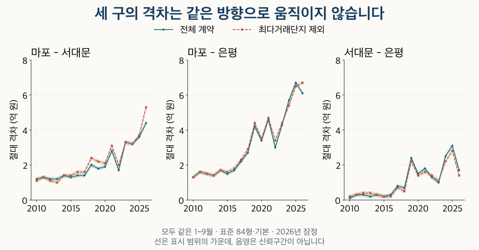

수도권 가격 지도 · 서북권 격차의 시기
마포·서대문·은평 아파트 가격: 격차는 언제 벌어졌을까?
마포·서대문·은평의 84형 가격 격차가 벌어진 시기를 같은 기간으로 비교합니다. 연식·거래 집중에 따라 달라지는 결과와 재개발 준공·입주의 서로 다른 날짜를 확인하세요.
분석 기간 · 2010~2025년·같은 1~9월은 2026년까지 · 끝월 잠정 | 자료 기준일 · 거래 2026-10-04 · 재고 2026-10-02
마포·서대문·은평의 아파트 가격 차이는 같은 방향으로 움직이지 않았습니다. 2026년 1~9월을 전년 같은 기간과 비교하면 마포–서대문 격차는 커졌지만, 마포–은평과 서대문–은평 격차는 줄었습니다. 다만 마포–은평의 축소는 거래가 가장 많은 단지를 제외하면 확정하기 어렵습니다. 세 구를 비교할 때는 지역 이름에 기간·연식·거래 구성을 함께 붙여야 합니다.
무엇을 같게 맞춘 비교인가요?
현재 단지 목록에서 마포구·서대문구·은평구에 속하는 아파트 매매를 비교합니다. 84형(전용 25·26평형)은 전용면적을 평으로 환산해 반올림한 두 구간입니다. 전용 84㎡ 이상 85㎡ 미만인 좁은 84㎡대는 별도의 민감도 비교로만 사용합니다. 공급면적이나 특정 단지의 한 주택형과 같지 않습니다.
2010~2025년의 완전 연도와 2010~2026년의 같은 1~9월을 나눴습니다. 2026년 9월까지의 최근 계약은 잠정이며 나중에 수정될 수 있습니다. 완전 연도와 그 안의 1~9월은 계약이 겹치므로 독립된 관측처럼 합쳐 세지 않습니다.
기본 집계는 관측된 해제·직거래 표시가 있는 계약도 포함하는 공통 정제입니다. 제외 집계는 그 표시가 있는 계약을 뺍니다. 예전의 빈 표시는 정상 거래가 확인됐다는 뜻이 아닙니다. 토지임대부는 제외했습니다. 가격은 최소 40계약과 10단지를 만족할 때만 표시하며, 비교 유보는 가격이 같거나 거래가 없다는 뜻이 아닙니다.
가격 분위는 0.1억 원 폭으로 표시합니다. 예를 들어 15.3~15.4는 15.3억 원 이상 15.4억 원 미만이라는 뜻이며, 통계적 신뢰구간이 아닙니다. 차이와 비율은 이 표시 범위만으로 계산하므로 정확한 값이나 끝점의 동률을 뜻하지 않습니다.
세 구의 가격은 어떻게 달라졌나요?
먼저 같은 면적의 전체 계약 중위가격을 나란히 놓습니다. 중위가격은 그 기간 거래의 가운데 값이며, 현재 매물 가격이나 같은 집의 반복 거래 가격은 아닙니다. 구 안에서도 거래된 단지가 달라지면 대표값이 바뀝니다.
| 기간 | 마포 | 서대문 | 은평 |
|---|---|---|---|
| 2010년 전체 | 5.0~5.1 | 3.8~3.9 | 3.8~3.9 |
| 2011년 전체 | 5.2~5.3 | 3.8~3.9 | 3.6~3.7 |
| 2012년 전체 | 4.8~4.9 | 3.6~3.7 | 3.5~3.6 |
| 2013년 전체 | 4.8~4.9 | 3.7~3.8 | 3.4~3.5 |
| 2014년 전체 | 5.1~5.2 | 3.8~3.9 | 3.5~3.6 |
| 2015년 전체 | 5.3~5.4 | 4.0~4.1 | 3.8~3.9 |
| 2016년 전체 | 6.0~6.1 | 4.6~4.7 | 4.3~4.4 |
| 2017년 전체 | 6.8~6.9 | 5.4~5.5 | 4.7~4.8 |
| 2018년 전체 | 8.0~8.1 | 5.9~6.0 | 5.2~5.3 |
| 2019년 전체 | 9.5~9.6 | 7.7~7.8 | 5.9~6.0 |
| 2020년 전체 | 10.5~10.6 | 8.4~8.5 | 6.9~7.0 |
| 2021년 전체 | 13.5~13.6 | 10.5~10.6 | 8.8~8.9 |
| 2022년 전체 | 12.6~12.7 | 10.4~10.5 | 9.1~9.2 |
| 2023년 전체 | 12.9~13.0 | 9.7~9.8 | 8.6~8.7 |
| 2024년 전체 | 14.2~14.3 | 10.9~11.0 | 8.5~8.6 |
| 2025년 전체 | 15.2~15.3 | 12.0~12.1 | 9.1~9.2 |
최근 기간은 전년 전체와 비교하지 않습니다. 아래 표에서 같은 1~9월을 맞춰 읽으면 2026년의 미완성 연도를 완전 연도처럼 취급하지 않을 수 있습니다. 세 구의 가격 분포는 뒤의 펼침표에 따로 남겼습니다.
모든 연도의 같은 1~9월 가격 펼치기
| 기간 | 마포 | 서대문 | 은평 |
|---|---|---|---|
| 2010년 1~9월 | 4.9~5.0 | 3.7~3.8 | 3.6~3.7 |
| 2011년 1~9월 | 5.2~5.3 | 3.9~4.0 | 3.6~3.7 |
| 2012년 1~9월 | 4.9~5.0 | 3.7~3.8 | 3.4~3.5 |
| 2013년 1~9월 | 4.8~4.9 | 3.6~3.7 | 3.4~3.5 |
| 2014년 1~9월 | 5.1~5.2 | 3.7~3.8 | 3.4~3.5 |
| 2015년 1~9월 | 5.3~5.4 | 4.0~4.1 | 3.8~3.9 |
| 2016년 1~9월 | 5.9~6.0 | 4.5~4.6 | 4.2~4.3 |
| 2017년 1~9월 | 6.7~6.8 | 5.3~5.4 | 4.5~4.6 |
| 2018년 1~9월 | 7.9~8.0 | 5.9~6.0 | 5.2~5.3 |
| 2019년 1~9월 | 9.4~9.5 | 7.6~7.7 | 5.2~5.3 |
| 2020년 1~9월 | 9.9~10.0 | 8.0~8.1 | 6.5~6.6 |
| 2021년 1~9월 | 13.4~13.5 | 10.6~10.7 | 8.8~8.9 |
| 2022년 1~9월 | 12.5~12.6 | 10.8~10.9 | 9.5~9.6 |
| 2023년 1~9월 | 13.0~13.1 | 9.7~9.8 | 8.7~8.8 |
| 2024년 1~9월 | 14.2~14.3 | 11.0~11.1 | 8.5~8.6 |
| 2025년 1~9월 | 15.5~15.6 | 11.9~12.0 | 8.8~8.9 |
| 2026년 1~9월 * | 15.3~15.4 | 10.9~11.0 | 9.2~9.3 |
마포 · 가격의 가운데 절반 범위
| 기간 | 하위 25% 경계 | 중위가격 | 상위 25% 경계 |
|---|---|---|---|
| 2010년 전체 | 4.3~4.4 | 5.0~5.1 | 5.6~5.7 |
| 2011년 전체 | 4.4~4.5 | 5.2~5.3 | 6.1~6.2 |
| 2012년 전체 | 4.2~4.3 | 4.8~4.9 | 5.6~5.7 |
| 2013년 전체 | 4.2~4.3 | 4.8~4.9 | 5.5~5.6 |
| 2014년 전체 | 4.4~4.5 | 5.1~5.2 | 5.7~5.8 |
| 2015년 전체 | 4.7~4.8 | 5.3~5.4 | 6.0~6.1 |
| 2016년 전체 | 5.2~5.3 | 6.0~6.1 | 6.9~7.0 |
| 2017년 전체 | 5.9~6.0 | 6.8~6.9 | 8.0~8.1 |
| 2018년 전체 | 6.7~6.8 | 8.0~8.1 | 9.3~9.4 |
| 2019년 전체 | 8.3~8.4 | 9.5~9.6 | 11.9~12.0 |
| 2020년 전체 | 8.9~9.0 | 10.5~10.6 | 13.1~13.2 |
| 2021년 전체 | 10.9~11.0 | 13.5~13.6 | 16.4~16.5 |
| 2022년 전체 | 10.9~11.0 | 12.6~12.7 | 16.2~16.3 |
| 2023년 전체 | 10.2~10.3 | 12.9~13.0 | 15.5~15.6 |
| 2024년 전체 | 11.5~11.6 | 14.2~14.3 | 17.5~17.6 |
| 2025년 전체 | 12.3~12.4 | 15.2~15.3 | 19.7~19.8 |
| 2010년 1~9월 | 4.3~4.4 | 4.9~5.0 | 5.7~5.8 |
| 2011년 1~9월 | 4.4~4.5 | 5.2~5.3 | 6.1~6.2 |
| 2012년 1~9월 | 4.3~4.4 | 4.9~5.0 | 5.8~5.9 |
| 2013년 1~9월 | 4.2~4.3 | 4.8~4.9 | 5.5~5.6 |
| 2014년 1~9월 | 4.4~4.5 | 5.1~5.2 | 5.7~5.8 |
| 2015년 1~9월 | 4.7~4.8 | 5.3~5.4 | 6.0~6.1 |
| 2016년 1~9월 | 5.1~5.2 | 5.9~6.0 | 6.7~6.8 |
| 2017년 1~9월 | 5.9~6.0 | 6.7~6.8 | 8.0~8.1 |
| 2018년 1~9월 | 6.7~6.8 | 7.9~8.0 | 9.3~9.4 |
| 2019년 1~9월 | 8.2~8.3 | 9.4~9.5 | 11.8~11.9 |
| 2020년 1~9월 | 8.6~8.7 | 9.9~10.0 | 12.4~12.5 |
| 2021년 1~9월 | 10.9~11.0 | 13.4~13.5 | 16.0~16.1 |
| 2022년 1~9월 | 10.9~11.0 | 12.5~12.6 | 16.5~16.6 |
| 2023년 1~9월 | 10.1~10.2 | 13.0~13.1 | 15.6~15.7 |
| 2024년 1~9월 | 11.5~11.6 | 14.2~14.3 | 17.5~17.6 |
| 2025년 1~9월 | 12.4~12.5 | 15.5~15.6 | 19.8~19.9 |
| 2026년 1~9월 * | 11.9~12.0 | 15.3~15.4 | 20.4~20.5 |
서대문 · 가격의 가운데 절반 범위
| 기간 | 하위 25% 경계 | 중위가격 | 상위 25% 경계 |
|---|---|---|---|
| 2010년 전체 | 3.2~3.3 | 3.8~3.9 | 4.3~4.4 |
| 2011년 전체 | 3.4~3.5 | 3.8~3.9 | 4.2~4.3 |
| 2012년 전체 | 3.1~3.2 | 3.6~3.7 | 4.2~4.3 |
| 2013년 전체 | 3.1~3.2 | 3.7~3.8 | 4.2~4.3 |
| 2014년 전체 | 3.4~3.5 | 3.8~3.9 | 4.4~4.5 |
| 2015년 전체 | 3.5~3.6 | 4.0~4.1 | 4.7~4.8 |
| 2016년 전체 | 3.9~4.0 | 4.6~4.7 | 5.8~5.9 |
| 2017년 전체 | 4.4~4.5 | 5.4~5.5 | 7.0~7.1 |
| 2018년 전체 | 4.8~4.9 | 5.9~6.0 | 7.5~7.6 |
| 2019년 전체 | 6.0~6.1 | 7.7~7.8 | 9.4~9.5 |
| 2020년 전체 | 6.6~6.7 | 8.4~8.5 | 11.0~11.1 |
| 2021년 전체 | 8.4~8.5 | 10.5~10.6 | 13.5~13.6 |
| 2022년 전체 | 8.5~8.6 | 10.4~10.5 | 12.5~12.6 |
| 2023년 전체 | 7.5~7.6 | 9.7~9.8 | 11.8~11.9 |
| 2024년 전체 | 8.4~8.5 | 10.9~11.0 | 12.5~12.6 |
| 2025년 전체 | 8.9~9.0 | 12.0~12.1 | 13.5~13.6 |
| 2010년 1~9월 | 3.1~3.2 | 3.7~3.8 | 4.3~4.4 |
| 2011년 1~9월 | 3.4~3.5 | 3.9~4.0 | 4.2~4.3 |
| 2012년 1~9월 | 3.1~3.2 | 3.7~3.8 | 4.2~4.3 |
| 2013년 1~9월 | 3.1~3.2 | 3.6~3.7 | 4.2~4.3 |
| 2014년 1~9월 | 3.3~3.4 | 3.7~3.8 | 4.4~4.5 |
| 2015년 1~9월 | 3.5~3.6 | 4.0~4.1 | 4.7~4.8 |
| 2016년 1~9월 | 3.8~3.9 | 4.5~4.6 | 5.8~5.9 |
| 2017년 1~9월 | 4.3~4.4 | 5.3~5.4 | 6.9~7.0 |
| 2018년 1~9월 | 4.8~4.9 | 5.9~6.0 | 7.5~7.6 |
| 2019년 1~9월 | 5.9~6.0 | 7.6~7.7 | 9.0~9.1 |
| 2020년 1~9월 | 6.4~6.5 | 8.0~8.1 | 10.4~10.5 |
| 2021년 1~9월 | 8.4~8.5 | 10.6~10.7 | 13.5~13.6 |
| 2022년 1~9월 | 8.7~8.8 | 10.8~10.9 | 12.9~13.0 |
| 2023년 1~9월 | 7.5~7.6 | 9.7~9.8 | 11.7~11.8 |
| 2024년 1~9월 | 8.3~8.4 | 11.0~11.1 | 12.5~12.6 |
| 2025년 1~9월 | 8.9~9.0 | 11.9~12.0 | 13.4~13.5 |
| 2026년 1~9월 * | 8.4~8.5 | 10.9~11.0 | 14.5~14.6 |
은평 · 가격의 가운데 절반 범위
| 기간 | 하위 25% 경계 | 중위가격 | 상위 25% 경계 |
|---|---|---|---|
| 2010년 전체 | 3.3~3.4 | 3.8~3.9 | 4.0~4.1 |
| 2011년 전체 | 2.9~3.0 | 3.6~3.7 | 4.0~4.1 |
| 2012년 전체 | 2.9~3.0 | 3.5~3.6 | 4.1~4.2 |
| 2013년 전체 | 2.8~2.9 | 3.4~3.5 | 4.3~4.4 |
| 2014년 전체 | 2.9~3.0 | 3.5~3.6 | 4.4~4.5 |
| 2015년 전체 | 3.1~3.2 | 3.8~3.9 | 4.6~4.7 |
| 2016년 전체 | 3.4~3.5 | 4.3~4.4 | 5.0~5.1 |
| 2017년 전체 | 3.7~3.8 | 4.7~4.8 | 5.3~5.4 |
| 2018년 전체 | 4.2~4.3 | 5.2~5.3 | 6.0~6.1 |
| 2019년 전체 | 4.4~4.5 | 5.9~6.0 | 7.1~7.2 |
| 2020년 전체 | 5.0~5.1 | 6.9~7.0 | 8.2~8.3 |
| 2021년 전체 | 6.6~6.7 | 8.8~8.9 | 10.3~10.4 |
| 2022년 전체 | 6.8~6.9 | 9.1~9.2 | 10.6~10.7 |
| 2023년 전체 | 7.0~7.1 | 8.6~8.7 | 9.8~9.9 |
| 2024년 전체 | 7.0~7.1 | 8.5~8.6 | 10.5~10.6 |
| 2025년 전체 | 7.4~7.5 | 9.1~9.2 | 11.9~12.0 |
| 2010년 1~9월 | 3.0~3.1 | 3.6~3.7 | 3.9~4.0 |
| 2011년 1~9월 | 2.9~3.0 | 3.6~3.7 | 4.0~4.1 |
| 2012년 1~9월 | 2.8~2.9 | 3.4~3.5 | 4.0~4.1 |
| 2013년 1~9월 | 2.8~2.9 | 3.4~3.5 | 4.3~4.4 |
| 2014년 1~9월 | 2.9~3.0 | 3.4~3.5 | 4.3~4.4 |
| 2015년 1~9월 | 3.0~3.1 | 3.8~3.9 | 4.6~4.7 |
| 2016년 1~9월 | 3.4~3.5 | 4.2~4.3 | 4.9~5.0 |
| 2017년 1~9월 | 3.6~3.7 | 4.5~4.6 | 5.1~5.2 |
| 2018년 1~9월 | 4.2~4.3 | 5.2~5.3 | 6.0~6.1 |
| 2019년 1~9월 | 4.1~4.2 | 5.2~5.3 | 6.7~6.8 |
| 2020년 1~9월 | 4.9~5.0 | 6.5~6.6 | 7.8~7.9 |
| 2021년 1~9월 | 6.5~6.6 | 8.8~8.9 | 10.2~10.3 |
| 2022년 1~9월 | 7.0~7.1 | 9.5~9.6 | 10.8~10.9 |
| 2023년 1~9월 | 7.0~7.1 | 8.7~8.8 | 9.7~9.8 |
| 2024년 1~9월 | 7.2~7.3 | 8.5~8.6 | 10.5~10.6 |
| 2025년 1~9월 | 7.2~7.3 | 8.8~8.9 | 11.2~11.3 |
| 2026년 1~9월 * | 7.4~7.5 | 9.2~9.3 | 11.5~11.6 |
격차는 언제 벌어졌나요?
여기서 ‘격차 확대’는 두 구의 중위가격 사이 절대 차이가 직전 연도보다 커진 것입니다. 한 구의 가격 상승률이나 두 구 가격의 비율 변화와는 다른 지표입니다. 표에는 부호가 있는 차이, 절대 차이, 비율도 함께 남겼습니다.
2026년 같은 1~9월의 전년 대비 절대 격차 변화는 마포–서대문 +0.6~+1.0억 원, 마포–은평 −0.8~−0.4억 원, 서대문–은평 −1.6~−1.2억 원입니다. 확대 범위 전체가 양수일 때만 확대, 전체가 음수일 때만 축소로 읽습니다. 0을 포함하면 방향을 유보합니다.
‘가장 크게 벌어진 해’도 기간에 따라 달라집니다. 표준·기본·전체 계약에서 마포–서대문의 같은 1~9월 최대 확대는 2023년으로 구분됩니다. 반면 완전 연도에서는 2018·2021·2023년이 가능 후보여서 한 해로 확정하지 않습니다. 마포–은평의 같은 1~9월 최대 확대 역시 2019·2021·2023·2024년이 가능 후보입니다.
가능 후보는 표시 범위가 겹쳐 최대일 가능성을 배제할 수 없는 해입니다. 단독 확정은 그 해의 하한이 다른 모든 해의 상한보다 클 때만 붙였습니다. 이는 분석한 기간 안의 판단이며 최초 연도는 전년과의 확대를 계산하지 않습니다. 가장 큰 절대 격차와 가장 큰 확대를 혼동하지 않도록 두 목록을 모두 제공합니다.
마포−서대문 · 모든 해의 격차와 확대
| 기간 | 부호 차이 | 절대 차이 | 전년 대비 절대 차이 변화 | 확대 방향 | 첫 구/둘째 구 | 비율 변화 |
|---|---|---|---|---|---|---|
| 2010년 전체 | +1.1~+1.3 | 1.1~1.3 | 비교 유보 | 비교 유보 | 1.28~1.35 | 비교 유보 |
| 2011년 전체 | +1.3~+1.5 | 1.3~1.5 | +0.0~+0.4 | 방향 유보 | 1.33~1.40 | -0.02~0.12 |
| 2012년 전체 | +1.1~+1.3 | 1.1~1.3 | -0.4~+0.0 | 방향 유보 | 1.29~1.37 | -0.11~0.04 |
| 2013년 전체 | +1.0~+1.2 | 1.0~1.2 | -0.3~+0.1 | 방향 유보 | 1.26~1.33 | -0.11~0.04 |
| 2014년 전체 | +1.2~+1.4 | 1.2~1.4 | +0.0~+0.4 | 방향 유보 | 1.30~1.37 | -0.03~0.11 |
| 2015년 전체 | +1.2~+1.4 | 1.2~1.4 | -0.2~+0.2 | 방향 유보 | 1.29~1.35 | -0.08~0.05 |
| 2016년 전체 | +1.3~+1.5 | 1.3~1.5 | -0.1~+0.3 | 방향 유보 | 1.27~1.33 | -0.08~0.04 |
| 2017년 전체 | +1.3~+1.5 | 1.3~1.5 | -0.2~+0.2 | 방향 유보 | 1.23~1.28 | -0.10~0.01 |
| 2018년 전체 | +2.0~+2.2 | 2.0~2.2 | +0.5~+0.9 | 확대 | 1.33~1.38 | 0.05~0.15 |
| 2019년 전체 | +1.7~+1.9 | 1.7~1.9 | -0.5~-0.1 | 축소 | 1.21~1.25 | -0.17~-0.08 |
| 2020년 전체 | +2.0~+2.2 | 2.0~2.2 | +0.1~+0.5 | 확대 | 1.23~1.27 | -0.02~0.06 |
| 2021년 전체 | +2.9~+3.1 | 2.9~3.1 | +0.7~+1.1 | 확대 | 1.27~1.30 | 0.00~0.07 |
| 2022년 전체 | +2.1~+2.3 | 2.1~2.3 | -1.0~-0.6 | 축소 | 1.20~1.23 | -0.10~-0.04 |
| 2023년 전체 | +3.1~+3.3 | 3.1~3.3 | +0.8~+1.2 | 확대 | 1.31~1.35 | 0.08~0.15 |
| 2024년 전체 | +3.2~+3.4 | 3.2~3.4 | -0.1~+0.3 | 방향 유보 | 1.29~1.32 | -0.06~0.01 |
| 2025년 전체 | +3.1~+3.3 | 3.1~3.3 | -0.3~+0.1 | 방향 유보 | 1.25~1.28 | -0.07~-0.01 |
| 2010년 1~9월 | +1.1~+1.3 | 1.1~1.3 | 비교 유보 | 비교 유보 | 1.28~1.36 | 비교 유보 |
| 2011년 1~9월 | +1.2~+1.4 | 1.2~1.4 | -0.1~+0.3 | 방향 유보 | 1.30~1.36 | -0.06~0.08 |
| 2012년 1~9월 | +1.1~+1.3 | 1.1~1.3 | -0.3~+0.1 | 방향 유보 | 1.28~1.36 | -0.08~0.06 |
| 2013년 1~9월 | +1.1~+1.3 | 1.1~1.3 | -0.2~+0.2 | 방향 유보 | 1.29~1.37 | -0.07~0.09 |
| 2014년 1~9월 | +1.3~+1.5 | 1.3~1.5 | +0.0~+0.4 | 방향 유보 | 1.34~1.41 | -0.03~0.12 |
| 2015년 1~9월 | +1.2~+1.4 | 1.2~1.4 | -0.3~+0.1 | 방향 유보 | 1.29~1.35 | -0.12~0.01 |
| 2016년 1~9월 | +1.3~+1.5 | 1.3~1.5 | -0.1~+0.3 | 방향 유보 | 1.28~1.34 | -0.07~0.05 |
| 2017년 1~9월 | +1.3~+1.5 | 1.3~1.5 | -0.2~+0.2 | 방향 유보 | 1.24~1.29 | -0.10~0.01 |
| 2018년 1~9월 | +1.9~+2.1 | 1.9~2.1 | +0.4~+0.8 | 확대 | 1.31~1.36 | 0.02~0.12 |
| 2019년 1~9월 | +1.7~+1.9 | 1.7~1.9 | -0.4~+0.0 | 방향 유보 | 1.22~1.25 | -0.14~-0.06 |
| 2020년 1~9월 | +1.8~+2.0 | 1.8~2.0 | -0.1~+0.3 | 방향 유보 | 1.22~1.25 | -0.03~0.03 |
| 2021년 1~9월 | +2.7~+2.9 | 2.7~2.9 | +0.7~+1.1 | 확대 | 1.25~1.28 | 0.00~0.06 |
| 2022년 1~9월 | +1.6~+1.8 | 1.6~1.8 | -1.3~-0.9 | 축소 | 1.14~1.17 | -0.14~-0.08 |
| 2023년 1~9월 | +3.2~+3.4 | 3.2~3.4 | +1.4~+1.8 | 확대 | 1.32~1.36 | 0.15~0.22 |
| 2024년 1~9월 | +3.1~+3.3 | 3.1~3.3 | -0.3~+0.1 | 방향 유보 | 1.27~1.30 | -0.09~-0.02 |
| 2025년 1~9월 | +3.5~+3.7 | 3.5~3.7 | +0.2~+0.6 | 확대 | 1.29~1.32 | -0.01~0.05 |
| 2026년 1~9월 * | +4.3~+4.5 | 4.3~4.5 | +0.6~+1.0 | 확대 | 1.39~1.42 | 0.07~0.13 |
마포−은평 · 모든 해의 격차와 확대
| 기간 | 부호 차이 | 절대 차이 | 전년 대비 절대 차이 변화 | 확대 방향 | 첫 구/둘째 구 | 비율 변화 |
|---|---|---|---|---|---|---|
| 2010년 전체 | +1.1~+1.3 | 1.1~1.3 | 비교 유보 | 비교 유보 | 1.28~1.35 | 비교 유보 |
| 2011년 전체 | +1.5~+1.7 | 1.5~1.7 | +0.2~+0.6 | 확대 | 1.40~1.48 | 0.05~0.20 |
| 2012년 전체 | +1.2~+1.4 | 1.2~1.4 | -0.5~-0.1 | 축소 | 1.33~1.40 | -0.15~0.00 |
| 2013년 전체 | +1.3~+1.5 | 1.3~1.5 | -0.1~+0.3 | 방향 유보 | 1.37~1.45 | -0.03~0.12 |
| 2014년 전체 | +1.5~+1.7 | 1.5~1.7 | +0.0~+0.4 | 방향 유보 | 1.41~1.49 | -0.04~0.12 |
| 2015년 전체 | +1.4~+1.6 | 1.4~1.6 | -0.3~+0.1 | 방향 유보 | 1.35~1.43 | -0.14~0.02 |
| 2016년 전체 | +1.6~+1.8 | 1.6~1.8 | +0.0~+0.4 | 방향 유보 | 1.36~1.42 | -0.07~0.07 |
| 2017년 전체 | +2.0~+2.2 | 2.0~2.2 | +0.2~+0.6 | 확대 | 1.41~1.47 | -0.01~0.11 |
| 2018년 전체 | +2.7~+2.9 | 2.7~2.9 | +0.5~+0.9 | 확대 | 1.50~1.56 | 0.03~0.15 |
| 2019년 전체 | +3.5~+3.7 | 3.5~3.7 | +0.6~+1.0 | 확대 | 1.58~1.63 | 0.02~0.13 |
| 2020년 전체 | +3.5~+3.7 | 3.5~3.7 | -0.2~+0.2 | 방향 유보 | 1.50~1.54 | -0.13~-0.04 |
| 2021년 전체 | +4.6~+4.8 | 4.6~4.8 | +0.9~+1.3 | 확대 | 1.51~1.55 | -0.03~0.05 |
| 2022년 전체 | +3.4~+3.6 | 3.4~3.6 | -1.4~-1.0 | 축소 | 1.36~1.40 | -0.19~-0.11 |
| 2023년 전체 | +4.2~+4.4 | 4.2~4.4 | +0.6~+1.0 | 확대 | 1.48~1.52 | 0.08~0.16 |
| 2024년 전체 | +5.6~+5.8 | 5.6~5.8 | +1.2~+1.6 | 확대 | 1.65~1.69 | 0.13~0.21 |
| 2025년 전체 | +6.0~+6.2 | 6.0~6.2 | +0.2~+0.6 | 확대 | 1.65~1.69 | -0.04~0.04 |
| 2010년 1~9월 | +1.2~+1.4 | 1.2~1.4 | 비교 유보 | 비교 유보 | 1.32~1.39 | 비교 유보 |
| 2011년 1~9월 | +1.5~+1.7 | 1.5~1.7 | +0.1~+0.5 | 확대 | 1.40~1.48 | 0.01~0.16 |
| 2012년 1~9월 | +1.4~+1.6 | 1.4~1.6 | -0.3~+0.1 | 방향 유보 | 1.40~1.48 | -0.08~0.08 |
| 2013년 1~9월 | +1.3~+1.5 | 1.3~1.5 | -0.3~+0.1 | 방향 유보 | 1.37~1.45 | -0.11~0.05 |
| 2014년 1~9월 | +1.6~+1.8 | 1.6~1.8 | +0.1~+0.5 | 확대 | 1.45~1.53 | 0.00~0.16 |
| 2015년 1~9월 | +1.4~+1.6 | 1.4~1.6 | -0.4~+0.0 | 방향 유보 | 1.35~1.43 | -0.18~-0.02 |
| 2016년 1~9월 | +1.6~+1.8 | 1.6~1.8 | +0.0~+0.4 | 방향 유보 | 1.37~1.43 | -0.06~0.08 |
| 2017년 1~9월 | +2.1~+2.3 | 2.1~2.3 | +0.3~+0.7 | 확대 | 1.45~1.52 | 0.02~0.15 |
| 2018년 1~9월 | +2.6~+2.8 | 2.6~2.8 | +0.3~+0.7 | 확대 | 1.49~1.54 | -0.03~0.09 |
| 2019년 1~9월 | +4.1~+4.3 | 4.1~4.3 | +1.3~+1.7 | 확대 | 1.77~1.83 | 0.23~0.34 |
| 2020년 1~9월 | +3.3~+3.5 | 3.3~3.5 | -1.0~-0.6 | 축소 | 1.50~1.54 | -0.33~-0.23 |
| 2021년 1~9월 | +4.5~+4.7 | 4.5~4.7 | +1.0~+1.4 | 확대 | 1.50~1.54 | -0.04~0.04 |
| 2022년 1~9월 | +2.9~+3.1 | 2.9~3.1 | -1.8~-1.4 | 축소 | 1.30~1.33 | -0.24~-0.17 |
| 2023년 1~9월 | +4.2~+4.4 | 4.2~4.4 | +1.1~+1.5 | 확대 | 1.47~1.51 | 0.14~0.21 |
| 2024년 1~9월 | +5.6~+5.8 | 5.6~5.8 | +1.2~+1.6 | 확대 | 1.65~1.69 | 0.14~0.22 |
| 2025년 1~9월 | +6.6~+6.8 | 6.6~6.8 | +0.8~+1.2 | 확대 | 1.74~1.78 | 0.05~0.13 |
| 2026년 1~9월 * | +6.0~+6.2 | 6.0~6.2 | -0.8~-0.4 | 축소 | 1.64~1.68 | -0.14~-0.06 |
서대문−은평 · 모든 해의 격차와 확대
| 기간 | 부호 차이 | 절대 차이 | 전년 대비 절대 차이 변화 | 확대 방향 | 첫 구/둘째 구 | 비율 변화 |
|---|---|---|---|---|---|---|
| 2010년 전체 | -0.1~+0.1 | 0.0~0.1 | 비교 유보 | 비교 유보 | 0.97~1.03 | 비교 유보 |
| 2011년 전체 | +0.1~+0.3 | 0.1~0.3 | +0.0~+0.3 | 방향 유보 | 1.02~1.09 | -0.01~0.12 |
| 2012년 전체 | +0.0~+0.2 | 0.0~0.2 | -0.3~+0.1 | 방향 유보 | 1.00~1.06 | -0.09~0.04 |
| 2013년 전체 | +0.2~+0.4 | 0.2~0.4 | +0.0~+0.4 | 방향 유보 | 1.05~1.12 | -0.01~0.12 |
| 2014년 전체 | +0.2~+0.4 | 0.2~0.4 | -0.2~+0.2 | 방향 유보 | 1.05~1.12 | -0.07~0.07 |
| 2015년 전체 | +0.1~+0.3 | 0.1~0.3 | -0.3~+0.1 | 방향 유보 | 1.02~1.08 | -0.10~0.03 |
| 2016년 전체 | +0.2~+0.4 | 0.2~0.4 | -0.1~+0.3 | 방향 유보 | 1.04~1.10 | -0.04~0.08 |
| 2017년 전체 | +0.6~+0.8 | 0.6~0.8 | +0.2~+0.6 | 확대 | 1.12~1.18 | 0.02~0.14 |
| 2018년 전체 | +0.6~+0.8 | 0.6~0.8 | -0.2~+0.2 | 방향 유보 | 1.11~1.16 | -0.07~0.04 |
| 2019년 전체 | +1.7~+1.9 | 1.7~1.9 | +0.9~+1.3 | 확대 | 1.28~1.33 | 0.12~0.22 |
| 2020년 전체 | +1.4~+1.6 | 1.4~1.6 | -0.5~-0.1 | 축소 | 1.20~1.24 | -0.13~-0.04 |
| 2021년 전체 | +1.6~+1.8 | 1.6~1.8 | +0.0~+0.4 | 방향 유보 | 1.17~1.21 | -0.07~0.01 |
| 2022년 전체 | +1.2~+1.4 | 1.2~1.4 | -0.6~-0.2 | 축소 | 1.13~1.16 | -0.08~-0.01 |
| 2023년 전체 | +1.0~+1.2 | 1.0~1.2 | -0.4~+0.0 | 방향 유보 | 1.11~1.14 | -0.05~0.01 |
| 2024년 전체 | +2.3~+2.5 | 2.3~2.5 | +1.1~+1.5 | 확대 | 1.26~1.30 | 0.12~0.19 |
| 2025년 전체 | +2.8~+3.0 | 2.8~3.0 | +0.3~+0.7 | 확대 | 1.30~1.33 | 0.00~0.07 |
| 2010년 1~9월 | +0.0~+0.2 | 0.0~0.2 | 비교 유보 | 비교 유보 | 1.00~1.06 | 비교 유보 |
| 2011년 1~9월 | +0.2~+0.4 | 0.2~0.4 | +0.0~+0.4 | 방향 유보 | 1.05~1.12 | -0.01~0.12 |
| 2012년 1~9월 | +0.2~+0.4 | 0.2~0.4 | -0.2~+0.2 | 방향 유보 | 1.05~1.12 | -0.07~0.07 |
| 2013년 1~9월 | +0.1~+0.3 | 0.1~0.3 | -0.3~+0.1 | 방향 유보 | 1.02~1.09 | -0.10~0.04 |
| 2014년 1~9월 | +0.2~+0.4 | 0.2~0.4 | -0.1~+0.3 | 방향 유보 | 1.05~1.12 | -0.04~0.10 |
| 2015년 1~9월 | +0.1~+0.3 | 0.1~0.3 | -0.3~+0.1 | 방향 유보 | 1.02~1.08 | -0.10~0.03 |
| 2016년 1~9월 | +0.2~+0.4 | 0.2~0.4 | -0.1~+0.3 | 방향 유보 | 1.04~1.10 | -0.04~0.08 |
| 2017년 1~9월 | +0.7~+0.9 | 0.7~0.9 | +0.3~+0.7 | 확대 | 1.15~1.20 | 0.05~0.16 |
| 2018년 1~9월 | +0.6~+0.8 | 0.6~0.8 | -0.3~+0.1 | 방향 유보 | 1.11~1.16 | -0.09~0.01 |
| 2019년 1~9월 | +2.3~+2.5 | 2.3~2.5 | +1.5~+1.9 | 확대 | 1.43~1.49 | 0.27~0.38 |
| 2020년 1~9월 | +1.4~+1.6 | 1.4~1.6 | -1.1~-0.7 | 축소 | 1.21~1.25 | -0.28~-0.18 |
| 2021년 1~9월 | +1.7~+1.9 | 1.7~1.9 | +0.1~+0.5 | 확대 | 1.19~1.22 | -0.06~0.01 |
| 2022년 1~9월 | +1.2~+1.4 | 1.2~1.4 | -0.7~-0.3 | 축소 | 1.12~1.15 | -0.10~-0.04 |
| 2023년 1~9월 | +0.9~+1.1 | 0.9~1.1 | -0.5~-0.1 | 축소 | 1.10~1.13 | -0.05~0.01 |
| 2024년 1~9월 | +2.4~+2.6 | 2.4~2.6 | +1.3~+1.7 | 확대 | 1.27~1.31 | 0.14~0.21 |
| 2025년 1~9월 | +3.0~+3.2 | 3.0~3.2 | +0.4~+0.8 | 확대 | 1.33~1.37 | 0.02~0.10 |
| 2026년 1~9월 * | +1.6~+1.8 | 1.6~1.8 | -1.6~-1.2 | 축소 | 1.17~1.20 | -0.20~-0.13 |
면적·정제·거래 구성별 최대 시기와 유보 펼치기
| 비교 | 기간 | 조건 | 구성 | 지표 | 가능 후보 연도 | 단독 확정 연도 | 계산 유보 연도 |
|---|---|---|---|---|---|---|---|
| 마포−서대문 | 완전 연도 | 표준·기본 | 전체 계약 | 절대 격차 | 2023·2024·2025 | 없음 | 없음 |
| 마포−서대문 | 완전 연도 | 표준·기본 | 전체 계약 | 전년 대비 확대 | 2018·2021·2023 | 없음 | 2010 |
| 마포−서대문 | 완전 연도 | 표준·기본 | 최다거래단지 제외 | 절대 격차 | 2024·2025 | 없음 | 없음 |
| 마포−서대문 | 완전 연도 | 표준·기본 | 최다거래단지 제외 | 전년 대비 확대 | 2018·2021·2023 | 없음 | 2010 |
| 마포−서대문 | 완전 연도 | 표준·기본 | 연식 0~4년 제외 | 절대 격차 | 2021 | 2021 | 없음 |
| 마포−서대문 | 완전 연도 | 표준·기본 | 연식 0~4년 제외 | 전년 대비 확대 | 2021 | 2021 | 2010 |
| 마포−서대문 | 완전 연도 | 표준·제외 | 전체 계약 | 절대 격차 | 2023·2024·2025 | 없음 | 없음 |
| 마포−서대문 | 완전 연도 | 표준·제외 | 전체 계약 | 전년 대비 확대 | 2021·2023 | 없음 | 2010 |
| 마포−서대문 | 완전 연도 | 표준·제외 | 최다거래단지 제외 | 절대 격차 | 2021·2023·2024·2025 | 없음 | 없음 |
| 마포−서대문 | 완전 연도 | 표준·제외 | 최다거래단지 제외 | 전년 대비 확대 | 2021·2023 | 없음 | 2010 |
| 마포−서대문 | 완전 연도 | 표준·제외 | 연식 0~4년 제외 | 절대 격차 | 2021 | 2021 | 없음 |
| 마포−서대문 | 완전 연도 | 표준·제외 | 연식 0~4년 제외 | 전년 대비 확대 | 2021 | 2021 | 2010 |
| 마포−서대문 | 완전 연도 | 좁은 면적·기본 | 전체 계약 | 절대 격차 | 2024·2025 | 없음 | 없음 |
| 마포−서대문 | 완전 연도 | 좁은 면적·기본 | 전체 계약 | 전년 대비 확대 | 2018·2020·2021·2023 | 없음 | 2010 |
| 마포−서대문 | 완전 연도 | 좁은 면적·기본 | 최다거래단지 제외 | 절대 격차 | 2023·2024·2025 | 없음 | 없음 |
| 마포−서대문 | 완전 연도 | 좁은 면적·기본 | 최다거래단지 제외 | 전년 대비 확대 | 2018·2021·2023 | 없음 | 2010 |
| 마포−서대문 | 완전 연도 | 좁은 면적·기본 | 연식 0~4년 제외 | 절대 격차 | 2021 | 2021 | 없음 |
| 마포−서대문 | 완전 연도 | 좁은 면적·기본 | 연식 0~4년 제외 | 전년 대비 확대 | 2021 | 2021 | 2010 |
| 마포−서대문 | 완전 연도 | 좁은 면적·제외 | 전체 계약 | 절대 격차 | 2023·2024·2025 | 없음 | 없음 |
| 마포−서대문 | 완전 연도 | 좁은 면적·제외 | 전체 계약 | 전년 대비 확대 | 2018·2020·2021·2023 | 없음 | 2010 |
| 마포−서대문 | 완전 연도 | 좁은 면적·제외 | 최다거래단지 제외 | 절대 격차 | 2023·2025 | 없음 | 없음 |
| 마포−서대문 | 완전 연도 | 좁은 면적·제외 | 최다거래단지 제외 | 전년 대비 확대 | 2018·2021·2023 | 없음 | 2010 |
| 마포−서대문 | 완전 연도 | 좁은 면적·제외 | 연식 0~4년 제외 | 절대 격차 | 2021 | 2021 | 없음 |
| 마포−서대문 | 완전 연도 | 좁은 면적·제외 | 연식 0~4년 제외 | 전년 대비 확대 | 2021 | 2021 | 2010 |
| 마포−서대문 | 같은 1~9월 | 표준·기본 | 전체 계약 | 절대 격차 | 2026 | 2026 | 없음 |
| 마포−서대문 | 같은 1~9월 | 표준·기본 | 전체 계약 | 전년 대비 확대 | 2023 | 2023 | 2010 |
| 마포−서대문 | 같은 1~9월 | 표준·기본 | 최다거래단지 제외 | 절대 격차 | 2026 | 2026 | 없음 |
| 마포−서대문 | 같은 1~9월 | 표준·기본 | 최다거래단지 제외 | 전년 대비 확대 | 2023·2026 | 없음 | 2010 |
| 마포−서대문 | 같은 1~9월 | 표준·기본 | 연식 0~4년 제외 | 절대 격차 | 2026 | 2026 | 없음 |
| 마포−서대문 | 같은 1~9월 | 표준·기본 | 연식 0~4년 제외 | 전년 대비 확대 | 2021 | 2021 | 2010 |
| 마포−서대문 | 같은 1~9월 | 표준·제외 | 전체 계약 | 절대 격차 | 2026 | 2026 | 없음 |
| 마포−서대문 | 같은 1~9월 | 표준·제외 | 전체 계약 | 전년 대비 확대 | 2023 | 2023 | 2010 |
| 마포−서대문 | 같은 1~9월 | 표준·제외 | 최다거래단지 제외 | 절대 격차 | 2026 | 2026 | 없음 |
| 마포−서대문 | 같은 1~9월 | 표준·제외 | 최다거래단지 제외 | 전년 대비 확대 | 2021·2023·2025·2026 | 없음 | 2010 |
| 마포−서대문 | 같은 1~9월 | 표준·제외 | 연식 0~4년 제외 | 절대 격차 | 2026 | 2026 | 없음 |
| 마포−서대문 | 같은 1~9월 | 표준·제외 | 연식 0~4년 제외 | 전년 대비 확대 | 2021 | 2021 | 2010 |
| 마포−서대문 | 같은 1~9월 | 좁은 면적·기본 | 전체 계약 | 절대 격차 | 2026 | 2026 | 없음 |
| 마포−서대문 | 같은 1~9월 | 좁은 면적·기본 | 전체 계약 | 전년 대비 확대 | 2023 | 2023 | 2010 |
| 마포−서대문 | 같은 1~9월 | 좁은 면적·기본 | 최다거래단지 제외 | 절대 격차 | 2026 | 2026 | 없음 |
| 마포−서대문 | 같은 1~9월 | 좁은 면적·기본 | 최다거래단지 제외 | 전년 대비 확대 | 2026 | 2026 | 2010 |
| 마포−서대문 | 같은 1~9월 | 좁은 면적·기본 | 연식 0~4년 제외 | 절대 격차 | 2026 | 2026 | 없음 |
| 마포−서대문 | 같은 1~9월 | 좁은 면적·기본 | 연식 0~4년 제외 | 전년 대비 확대 | 2021 | 2021 | 2010 |
| 마포−서대문 | 같은 1~9월 | 좁은 면적·제외 | 전체 계약 | 절대 격차 | 2026 | 2026 | 없음 |
| 마포−서대문 | 같은 1~9월 | 좁은 면적·제외 | 전체 계약 | 전년 대비 확대 | 2023 | 2023 | 2010 |
| 마포−서대문 | 같은 1~9월 | 좁은 면적·제외 | 최다거래단지 제외 | 절대 격차 | 2026 | 2026 | 없음 |
| 마포−서대문 | 같은 1~9월 | 좁은 면적·제외 | 최다거래단지 제외 | 전년 대비 확대 | 2021·2023·2025·2026 | 없음 | 2010 |
| 마포−서대문 | 같은 1~9월 | 좁은 면적·제외 | 연식 0~4년 제외 | 절대 격차 | 2026 | 2026 | 없음 |
| 마포−서대문 | 같은 1~9월 | 좁은 면적·제외 | 연식 0~4년 제외 | 전년 대비 확대 | 2021 | 2021 | 2010 |
| 마포−은평 | 완전 연도 | 표준·기본 | 전체 계약 | 절대 격차 | 2025 | 2025 | 없음 |
| 마포−은평 | 완전 연도 | 표준·기본 | 전체 계약 | 전년 대비 확대 | 2021·2024 | 없음 | 2010 |
| 마포−은평 | 완전 연도 | 표준·기본 | 최다거래단지 제외 | 절대 격차 | 2025 | 2025 | 없음 |
| 마포−은평 | 완전 연도 | 표준·기본 | 최다거래단지 제외 | 전년 대비 확대 | 2019·2021·2023·2024 | 없음 | 2010 |
| 마포−은평 | 완전 연도 | 표준·기본 | 연식 0~4년 제외 | 절대 격차 | 2025 | 2025 | 없음 |
| 마포−은평 | 완전 연도 | 표준·기본 | 연식 0~4년 제외 | 전년 대비 확대 | 2019·2021·2024·2025 | 없음 | 2010 |
| 마포−은평 | 완전 연도 | 표준·제외 | 전체 계약 | 절대 격차 | 2025 | 2025 | 없음 |
| 마포−은평 | 완전 연도 | 표준·제외 | 전체 계약 | 전년 대비 확대 | 2019·2021·2023·2024 | 없음 | 2010 |
| 마포−은평 | 완전 연도 | 표준·제외 | 최다거래단지 제외 | 절대 격차 | 2025 | 2025 | 없음 |
| 마포−은평 | 완전 연도 | 표준·제외 | 최다거래단지 제외 | 전년 대비 확대 | 2019·2021·2023·2024·2025 | 없음 | 2010 |
| 마포−은평 | 완전 연도 | 표준·제외 | 연식 0~4년 제외 | 절대 격차 | 2025 | 2025 | 없음 |
| 마포−은평 | 완전 연도 | 표준·제외 | 연식 0~4년 제외 | 전년 대비 확대 | 2019·2021·2024·2025 | 없음 | 2010 |
| 마포−은평 | 완전 연도 | 좁은 면적·기본 | 전체 계약 | 절대 격차 | 2025 | 2025 | 없음 |
| 마포−은평 | 완전 연도 | 좁은 면적·기본 | 전체 계약 | 전년 대비 확대 | 2021·2024 | 없음 | 2010 |
| 마포−은평 | 완전 연도 | 좁은 면적·기본 | 최다거래단지 제외 | 절대 격차 | 2025 | 2025 | 없음 |
| 마포−은평 | 완전 연도 | 좁은 면적·기본 | 최다거래단지 제외 | 전년 대비 확대 | 2019·2021·2023·2024 | 없음 | 2010 |
| 마포−은평 | 완전 연도 | 좁은 면적·기본 | 연식 0~4년 제외 | 절대 격차 | 2025 | 2025 | 없음 |
| 마포−은평 | 완전 연도 | 좁은 면적·기본 | 연식 0~4년 제외 | 전년 대비 확대 | 2019·2021·2024·2025 | 없음 | 2010 |
| 마포−은평 | 완전 연도 | 좁은 면적·제외 | 전체 계약 | 절대 격차 | 2025 | 2025 | 없음 |
| 마포−은평 | 완전 연도 | 좁은 면적·제외 | 전체 계약 | 전년 대비 확대 | 2021·2023·2024 | 없음 | 2010 |
| 마포−은평 | 완전 연도 | 좁은 면적·제외 | 최다거래단지 제외 | 절대 격차 | 2025 | 2025 | 없음 |
| 마포−은평 | 완전 연도 | 좁은 면적·제외 | 최다거래단지 제외 | 전년 대비 확대 | 2019·2021·2023·2024 | 없음 | 2010 |
| 마포−은평 | 완전 연도 | 좁은 면적·제외 | 연식 0~4년 제외 | 절대 격차 | 2025 | 2025 | 없음 |
| 마포−은평 | 완전 연도 | 좁은 면적·제외 | 연식 0~4년 제외 | 전년 대비 확대 | 2019·2021·2024·2025 | 없음 | 2010 |
| 마포−은평 | 같은 1~9월 | 표준·기본 | 전체 계약 | 절대 격차 | 2025 | 2025 | 없음 |
| 마포−은평 | 같은 1~9월 | 표준·기본 | 전체 계약 | 전년 대비 확대 | 2019·2021·2023·2024 | 없음 | 2010 |
| 마포−은평 | 같은 1~9월 | 표준·기본 | 최다거래단지 제외 | 절대 격차 | 2025·2026 | 없음 | 없음 |
| 마포−은평 | 같은 1~9월 | 표준·기본 | 최다거래단지 제외 | 전년 대비 확대 | 2019·2021·2025 | 없음 | 2010 |
| 마포−은평 | 같은 1~9월 | 표준·기본 | 연식 0~4년 제외 | 절대 격차 | 2025 | 2025 | 없음 |
| 마포−은평 | 같은 1~9월 | 표준·기본 | 연식 0~4년 제외 | 전년 대비 확대 | 2019·2021·2024 | 없음 | 2010 |
| 마포−은평 | 같은 1~9월 | 표준·제외 | 전체 계약 | 절대 격차 | 2025 | 2025 | 없음 |
| 마포−은평 | 같은 1~9월 | 표준·제외 | 전체 계약 | 전년 대비 확대 | 2019·2021·2023·2025 | 없음 | 2010 |
| 마포−은평 | 같은 1~9월 | 표준·제외 | 최다거래단지 제외 | 절대 격차 | 2025·2026 | 없음 | 없음 |
| 마포−은평 | 같은 1~9월 | 표준·제외 | 최다거래단지 제외 | 전년 대비 확대 | 2019·2021·2024·2025 | 없음 | 2010 |
| 마포−은평 | 같은 1~9월 | 표준·제외 | 연식 0~4년 제외 | 절대 격차 | 2025 | 2025 | 없음 |
| 마포−은평 | 같은 1~9월 | 표준·제외 | 연식 0~4년 제외 | 전년 대비 확대 | 2019·2021·2025 | 없음 | 2010 |
| 마포−은평 | 같은 1~9월 | 좁은 면적·기본 | 전체 계약 | 절대 격차 | 2025 | 2025 | 없음 |
| 마포−은평 | 같은 1~9월 | 좁은 면적·기본 | 전체 계약 | 전년 대비 확대 | 2019·2021·2024 | 없음 | 2010 |
| 마포−은평 | 같은 1~9월 | 좁은 면적·기본 | 최다거래단지 제외 | 절대 격차 | 2025·2026 | 없음 | 없음 |
| 마포−은평 | 같은 1~9월 | 좁은 면적·기본 | 최다거래단지 제외 | 전년 대비 확대 | 2019·2021·2024·2025 | 없음 | 2010 |
| 마포−은평 | 같은 1~9월 | 좁은 면적·기본 | 연식 0~4년 제외 | 절대 격차 | 2025 | 2025 | 없음 |
| 마포−은평 | 같은 1~9월 | 좁은 면적·기본 | 연식 0~4년 제외 | 전년 대비 확대 | 2019·2021·2025 | 없음 | 2010 |
| 마포−은평 | 같은 1~9월 | 좁은 면적·제외 | 전체 계약 | 절대 격차 | 2025 | 2025 | 없음 |
| 마포−은평 | 같은 1~9월 | 좁은 면적·제외 | 전체 계약 | 전년 대비 확대 | 2019·2021·2023·2025 | 없음 | 2010 |
| 마포−은평 | 같은 1~9월 | 좁은 면적·제외 | 최다거래단지 제외 | 절대 격차 | 2025·2026 | 없음 | 없음 |
| 마포−은평 | 같은 1~9월 | 좁은 면적·제외 | 최다거래단지 제외 | 전년 대비 확대 | 2019·2021·2024·2025 | 없음 | 2010 |
| 마포−은평 | 같은 1~9월 | 좁은 면적·제외 | 연식 0~4년 제외 | 절대 격차 | 2025 | 2025 | 없음 |
| 마포−은평 | 같은 1~9월 | 좁은 면적·제외 | 연식 0~4년 제외 | 전년 대비 확대 | 2019·2021·2025 | 없음 | 2010 |
| 서대문−은평 | 완전 연도 | 표준·기본 | 전체 계약 | 절대 격차 | 2025 | 2025 | 없음 |
| 서대문−은평 | 완전 연도 | 표준·기본 | 전체 계약 | 전년 대비 확대 | 2019·2024 | 없음 | 2010 |
| 서대문−은평 | 완전 연도 | 표준·기본 | 최다거래단지 제외 | 절대 격차 | 2025 | 2025 | 없음 |
| 서대문−은평 | 완전 연도 | 표준·기본 | 최다거래단지 제외 | 전년 대비 확대 | 2019·2024 | 없음 | 2010 |
| 서대문−은평 | 완전 연도 | 표준·기본 | 연식 0~4년 제외 | 절대 격차 | 2025 | 2025 | 없음 |
| 서대문−은평 | 완전 연도 | 표준·기본 | 연식 0~4년 제외 | 전년 대비 확대 | 2019·2022·2024·2025 | 없음 | 2010 |
| 서대문−은평 | 완전 연도 | 표준·제외 | 전체 계약 | 절대 격차 | 2025 | 2025 | 없음 |
| 서대문−은평 | 완전 연도 | 표준·제외 | 전체 계약 | 전년 대비 확대 | 2019·2024 | 없음 | 2010 |
| 서대문−은평 | 완전 연도 | 표준·제외 | 최다거래단지 제외 | 절대 격차 | 2025 | 2025 | 없음 |
| 서대문−은평 | 완전 연도 | 표준·제외 | 최다거래단지 제외 | 전년 대비 확대 | 2019·2024 | 없음 | 2010 |
| 서대문−은평 | 완전 연도 | 표준·제외 | 연식 0~4년 제외 | 절대 격차 | 2025 | 2025 | 없음 |
| 서대문−은평 | 완전 연도 | 표준·제외 | 연식 0~4년 제외 | 전년 대비 확대 | 2019·2023·2024·2025 | 없음 | 2010 |
| 서대문−은평 | 완전 연도 | 좁은 면적·기본 | 전체 계약 | 절대 격차 | 2025 | 2025 | 없음 |
| 서대문−은평 | 완전 연도 | 좁은 면적·기본 | 전체 계약 | 전년 대비 확대 | 2019·2024 | 없음 | 2010 |
| 서대문−은평 | 완전 연도 | 좁은 면적·기본 | 최다거래단지 제외 | 절대 격차 | 2025 | 2025 | 없음 |
| 서대문−은평 | 완전 연도 | 좁은 면적·기본 | 최다거래단지 제외 | 전년 대비 확대 | 2019·2024·2025 | 없음 | 2010 |
| 서대문−은평 | 완전 연도 | 좁은 면적·기본 | 연식 0~4년 제외 | 절대 격차 | 2025 | 2025 | 없음 |
| 서대문−은평 | 완전 연도 | 좁은 면적·기본 | 연식 0~4년 제외 | 전년 대비 확대 | 2019·2020·2023·2024·2025 | 없음 | 2010 |
| 서대문−은평 | 완전 연도 | 좁은 면적·제외 | 전체 계약 | 절대 격차 | 2024·2025 | 없음 | 없음 |
| 서대문−은평 | 완전 연도 | 좁은 면적·제외 | 전체 계약 | 전년 대비 확대 | 2019·2024 | 없음 | 2010 |
| 서대문−은평 | 완전 연도 | 좁은 면적·제외 | 최다거래단지 제외 | 절대 격차 | 2025 | 2025 | 없음 |
| 서대문−은평 | 완전 연도 | 좁은 면적·제외 | 최다거래단지 제외 | 전년 대비 확대 | 2019·2024 | 없음 | 2010 |
| 서대문−은평 | 완전 연도 | 좁은 면적·제외 | 연식 0~4년 제외 | 절대 격차 | 2025 | 2025 | 없음 |
| 서대문−은평 | 완전 연도 | 좁은 면적·제외 | 연식 0~4년 제외 | 전년 대비 확대 | 2023·2024 | 없음 | 2010 |
| 서대문−은평 | 같은 1~9월 | 표준·기본 | 전체 계약 | 절대 격차 | 2025 | 2025 | 없음 |
| 서대문−은평 | 같은 1~9월 | 표준·기본 | 전체 계약 | 전년 대비 확대 | 2019·2024 | 없음 | 2010 |
| 서대문−은평 | 같은 1~9월 | 표준·기본 | 최다거래단지 제외 | 절대 격차 | 2025 | 2025 | 없음 |
| 서대문−은평 | 같은 1~9월 | 표준·기본 | 최다거래단지 제외 | 전년 대비 확대 | 2019 | 2019 | 2010 |
| 서대문−은평 | 같은 1~9월 | 표준·기본 | 연식 0~4년 제외 | 절대 격차 | 2025 | 2025 | 없음 |
| 서대문−은평 | 같은 1~9월 | 표준·기본 | 연식 0~4년 제외 | 전년 대비 확대 | 2019·2024 | 없음 | 2010 |
| 서대문−은평 | 같은 1~9월 | 표준·제외 | 전체 계약 | 절대 격차 | 2025 | 2025 | 없음 |
| 서대문−은평 | 같은 1~9월 | 표준·제외 | 전체 계약 | 전년 대비 확대 | 2019·2024 | 없음 | 2010 |
| 서대문−은평 | 같은 1~9월 | 표준·제외 | 최다거래단지 제외 | 절대 격차 | 2024·2025 | 없음 | 없음 |
| 서대문−은평 | 같은 1~9월 | 표준·제외 | 최다거래단지 제외 | 전년 대비 확대 | 2019·2024 | 없음 | 2010 |
| 서대문−은평 | 같은 1~9월 | 표준·제외 | 연식 0~4년 제외 | 절대 격차 | 2025 | 2025 | 없음 |
| 서대문−은평 | 같은 1~9월 | 표준·제외 | 연식 0~4년 제외 | 전년 대비 확대 | 2019·2024 | 없음 | 2010 |
| 서대문−은평 | 같은 1~9월 | 좁은 면적·기본 | 전체 계약 | 절대 격차 | 2025 | 2025 | 없음 |
| 서대문−은평 | 같은 1~9월 | 좁은 면적·기본 | 전체 계약 | 전년 대비 확대 | 2019 | 2019 | 2010 |
| 서대문−은평 | 같은 1~9월 | 좁은 면적·기본 | 최다거래단지 제외 | 절대 격차 | 2025 | 2025 | 없음 |
| 서대문−은평 | 같은 1~9월 | 좁은 면적·기본 | 최다거래단지 제외 | 전년 대비 확대 | 2019·2024 | 없음 | 2010 |
| 서대문−은평 | 같은 1~9월 | 좁은 면적·기본 | 연식 0~4년 제외 | 절대 격차 | 2025 | 2025 | 없음 |
| 서대문−은평 | 같은 1~9월 | 좁은 면적·기본 | 연식 0~4년 제외 | 전년 대비 확대 | 2019·2022·2024·2025 | 없음 | 2010 |
| 서대문−은평 | 같은 1~9월 | 좁은 면적·제외 | 전체 계약 | 절대 격차 | 2025 | 2025 | 없음 |
| 서대문−은평 | 같은 1~9월 | 좁은 면적·제외 | 전체 계약 | 전년 대비 확대 | 2019·2024 | 없음 | 2010 |
| 서대문−은평 | 같은 1~9월 | 좁은 면적·제외 | 최다거래단지 제외 | 절대 격차 | 2025 | 2025 | 없음 |
| 서대문−은평 | 같은 1~9월 | 좁은 면적·제외 | 최다거래단지 제외 | 전년 대비 확대 | 2019·2024 | 없음 | 2010 |
| 서대문−은평 | 같은 1~9월 | 좁은 면적·제외 | 연식 0~4년 제외 | 절대 격차 | 2025 | 2025 | 없음 |
| 서대문−은평 | 같은 1~9월 | 좁은 면적·제외 | 연식 0~4년 제외 | 전년 대비 확대 | 2019·2023·2024 | 없음 | 2010 |
거래가 몰린 단지 하나를 빼도 같은 결론일까요?
마포–은평의 최근 축소는 이 조건에 민감합니다. 2026년 같은 1~9월의 표준·기본 비교에서 각 구의 최다거래단지를 하나씩 빼면 전년 대비 격차 변화는 0.0~+0.4억 원이 됩니다. 전체 계약에서 보였던 축소를 확정할 수 없습니다. 이를 서북권 전체의 구조적인 가격 수렴으로 부르기 어려운 이유입니다.

건수가 같으면 미리 정한 단지 순서로 하나를 선택합니다. 제외 후에도 같은 가격 표시 기준을 다시 적용합니다. 별도의 ‘연식 0~4년 제외’는 준공연도가 확인된 5년 이상 계약만 남깁니다. 연식 미상을 오래된 주택으로 넣지 않습니다.
마포−서대문 · 전체 계약의 확대 민감도
| 기간 | 표준·기본 | 좁은 면적·기본 | 표준·제외 | 좁은 면적·제외 |
|---|---|---|---|---|
| 2010년 전체 | 비교 유보 | 비교 유보 | 비교 유보 | 비교 유보 |
| 2011년 전체 | +0.0~+0.4 | -0.1~+0.3 | +0.0~+0.4 | -0.1~+0.3 |
| 2012년 전체 | -0.4~+0.0 | -0.4~+0.0 | -0.4~+0.0 | -0.4~+0.0 |
| 2013년 전체 | -0.3~+0.1 | -0.2~+0.2 | -0.3~+0.1 | -0.2~+0.2 |
| 2014년 전체 | +0.0~+0.4 | +0.0~+0.4 | +0.0~+0.4 | +0.0~+0.4 |
| 2015년 전체 | -0.2~+0.2 | -0.2~+0.2 | -0.2~+0.2 | -0.2~+0.2 |
| 2016년 전체 | -0.1~+0.3 | -0.1~+0.3 | -0.1~+0.3 | -0.1~+0.3 |
| 2017년 전체 | -0.2~+0.2 | -0.2~+0.2 | -0.2~+0.2 | -0.2~+0.2 |
| 2018년 전체 | +0.5~+0.9 | +0.5~+0.9 | +0.5~+0.9 | +0.5~+0.9 |
| 2019년 전체 | -0.5~-0.1 | -0.7~-0.3 | -0.5~-0.1 | -0.7~-0.3 |
| 2020년 전체 | +0.1~+0.5 | +0.2~+0.6 | +0.1~+0.5 | +0.2~+0.6 |
| 2021년 전체 | +0.7~+1.1 | +0.6~+1.0 | +0.7~+1.1 | +0.6~+1.0 |
| 2022년 전체 | -1.0~-0.6 | -0.5~-0.1 | -1.2~-0.8 | -0.8~-0.4 |
| 2023년 전체 | +0.8~+1.2 | +0.3~+0.7 | +1.0~+1.4 | +0.6~+1.0 |
| 2024년 전체 | -0.1~+0.3 | +0.1~+0.5 | -0.3~+0.1 | -0.2~+0.2 |
| 2025년 전체 | -0.3~+0.1 | -0.2~+0.2 | +0.0~+0.4 | +0.0~+0.4 |
| 2010년 1~9월 | 비교 유보 | 비교 유보 | 비교 유보 | 비교 유보 |
| 2011년 1~9월 | -0.1~+0.3 | -0.1~+0.3 | -0.1~+0.3 | -0.1~+0.3 |
| 2012년 1~9월 | -0.3~+0.1 | -0.3~+0.1 | -0.3~+0.1 | -0.3~+0.1 |
| 2013년 1~9월 | -0.2~+0.2 | -0.3~+0.1 | -0.2~+0.2 | -0.3~+0.1 |
| 2014년 1~9월 | +0.0~+0.4 | +0.1~+0.5 | +0.0~+0.4 | +0.1~+0.5 |
| 2015년 1~9월 | -0.3~+0.1 | -0.3~+0.1 | -0.3~+0.1 | -0.3~+0.1 |
| 2016년 1~9월 | -0.1~+0.3 | -0.2~+0.2 | -0.1~+0.3 | -0.2~+0.2 |
| 2017년 1~9월 | -0.2~+0.2 | -0.1~+0.3 | -0.2~+0.2 | -0.1~+0.3 |
| 2018년 1~9월 | +0.4~+0.8 | +0.4~+0.8 | +0.4~+0.8 | +0.4~+0.8 |
| 2019년 1~9월 | -0.4~+0.0 | -0.7~-0.3 | -0.4~+0.0 | -0.7~-0.3 |
| 2020년 1~9월 | -0.1~+0.3 | +0.1~+0.5 | -0.1~+0.3 | +0.1~+0.5 |
| 2021년 1~9월 | +0.7~+1.1 | +0.5~+0.9 | +0.7~+1.1 | +0.6~+1.0 |
| 2022년 1~9월 | -1.3~-0.9 | -0.9~-0.5 | -1.5~-1.1 | -1.3~-0.9 |
| 2023년 1~9월 | +1.4~+1.8 | +1.0~+1.4 | +1.7~+2.1 | +1.6~+2.0 |
| 2024년 1~9월 | -0.3~+0.1 | +0.1~+0.5 | -0.6~-0.2 | -0.4~+0.0 |
| 2025년 1~9월 | +0.2~+0.6 | +0.2~+0.6 | +0.4~+0.8 | +0.5~+0.9 |
| 2026년 1~9월 * | +0.6~+1.0 | +0.5~+0.9 | +0.5~+0.9 | +0.3~+0.7 |
마포−서대문 · 최다거래단지 제외의 확대 민감도
| 기간 | 표준·기본 | 좁은 면적·기본 | 표준·제외 | 좁은 면적·제외 |
|---|---|---|---|---|
| 2010년 전체 | 비교 유보 | 비교 유보 | 비교 유보 | 비교 유보 |
| 2011년 전체 | +0.1~+0.5 | +0.1~+0.5 | +0.1~+0.5 | +0.1~+0.5 |
| 2012년 전체 | -0.4~+0.0 | -0.4~+0.0 | -0.4~+0.0 | -0.4~+0.0 |
| 2013년 전체 | -0.3~+0.1 | -0.2~+0.2 | -0.3~+0.1 | -0.2~+0.2 |
| 2014년 전체 | +0.1~+0.5 | +0.1~+0.5 | +0.1~+0.5 | +0.1~+0.5 |
| 2015년 전체 | -0.2~+0.2 | -0.1~+0.3 | -0.2~+0.2 | -0.1~+0.3 |
| 2016년 전체 | +0.0~+0.4 | -0.1~+0.3 | +0.0~+0.4 | -0.1~+0.3 |
| 2017년 전체 | -0.2~+0.2 | -0.3~+0.1 | -0.2~+0.2 | -0.3~+0.1 |
| 2018년 전체 | +0.4~+0.8 | +0.4~+0.8 | +0.4~+0.8 | +0.4~+0.8 |
| 2019년 전체 | -0.3~+0.1 | -0.2~+0.2 | -0.3~+0.1 | -0.2~+0.2 |
| 2020년 전체 | -0.1~+0.3 | -0.2~+0.2 | -0.1~+0.3 | -0.2~+0.2 |
| 2021년 전체 | +0.8~+1.2 | +0.7~+1.1 | +0.8~+1.2 | +0.7~+1.1 |
| 2022년 전체 | -1.1~-0.7 | -0.6~-0.2 | -1.1~-0.7 | -0.7~-0.3 |
| 2023년 전체 | +0.8~+1.2 | +0.3~+0.7 | +0.9~+1.3 | +0.6~+1.0 |
| 2024년 전체 | +0.1~+0.5 | +0.0~+0.4 | -0.4~+0.0 | -0.5~-0.1 |
| 2025년 전체 | -0.4~+0.0 | -0.2~+0.2 | +0.0~+0.4 | +0.1~+0.5 |
| 2010년 1~9월 | 비교 유보 | 비교 유보 | 비교 유보 | 비교 유보 |
| 2011년 1~9월 | +0.0~+0.4 | +0.1~+0.5 | +0.0~+0.4 | +0.1~+0.5 |
| 2012년 1~9월 | -0.4~+0.0 | -0.5~-0.1 | -0.4~+0.0 | -0.5~-0.1 |
| 2013년 1~9월 | -0.3~+0.1 | -0.3~+0.1 | -0.3~+0.1 | -0.3~+0.1 |
| 2014년 1~9월 | +0.2~+0.6 | +0.2~+0.6 | +0.2~+0.6 | +0.2~+0.6 |
| 2015년 1~9월 | -0.2~+0.2 | -0.2~+0.2 | -0.2~+0.2 | -0.2~+0.2 |
| 2016년 1~9월 | +0.0~+0.4 | +0.0~+0.4 | +0.0~+0.4 | +0.0~+0.4 |
| 2017년 1~9월 | -0.2~+0.2 | -0.3~+0.1 | -0.2~+0.2 | -0.3~+0.1 |
| 2018년 1~9월 | +0.6~+1.0 | +0.6~+1.0 | +0.6~+1.0 | +0.6~+1.0 |
| 2019년 1~9월 | -0.4~+0.0 | -0.6~-0.2 | -0.4~+0.0 | -0.6~-0.2 |
| 2020년 1~9월 | -0.3~+0.1 | -0.1~+0.3 | -0.3~+0.1 | -0.1~+0.3 |
| 2021년 1~9월 | +0.8~+1.2 | +0.7~+1.1 | +0.8~+1.2 | +0.7~+1.1 |
| 2022년 1~9월 | -1.3~-0.9 | -1.0~-0.6 | -1.4~-1.0 | -0.9~-0.5 |
| 2023년 1~9월 | +1.1~+1.5 | +0.8~+1.2 | +1.2~+1.6 | +0.9~+1.3 |
| 2024년 1~9월 | -0.3~+0.1 | -0.2~+0.2 | -0.7~-0.3 | -0.7~-0.3 |
| 2025년 1~9월 | +0.3~+0.7 | +0.3~+0.7 | +0.8~+1.2 | +0.7~+1.1 |
| 2026년 1~9월 * | +1.4~+1.8 | +1.4~+1.8 | +1.1~+1.5 | +1.1~+1.5 |
마포−서대문 · 연식 0~4년 제외의 확대 민감도
| 기간 | 표준·기본 | 좁은 면적·기본 | 표준·제외 | 좁은 면적·제외 |
|---|---|---|---|---|
| 2010년 전체 | 비교 유보 | 비교 유보 | 비교 유보 | 비교 유보 |
| 2011년 전체 | -0.1~+0.3 | +0.0~+0.4 | -0.1~+0.3 | +0.0~+0.4 |
| 2012년 전체 | -0.3~+0.1 | -0.4~+0.0 | -0.3~+0.1 | -0.4~+0.0 |
| 2013년 전체 | -0.3~+0.1 | -0.3~+0.1 | -0.3~+0.1 | -0.3~+0.1 |
| 2014년 전체 | +0.0~+0.4 | +0.0~+0.4 | +0.0~+0.4 | +0.0~+0.4 |
| 2015년 전체 | -0.2~+0.2 | -0.2~+0.2 | -0.2~+0.2 | -0.2~+0.2 |
| 2016년 전체 | +0.1~+0.5 | +0.1~+0.5 | +0.1~+0.5 | +0.1~+0.5 |
| 2017년 전체 | -0.3~+0.1 | -0.3~+0.1 | -0.3~+0.1 | -0.3~+0.1 |
| 2018년 전체 | +0.4~+0.8 | +0.3~+0.7 | +0.4~+0.8 | +0.3~+0.7 |
| 2019년 전체 | +0.4~+0.8 | +0.5~+0.9 | +0.4~+0.8 | +0.5~+0.9 |
| 2020년 전체 | -0.5~-0.1 | -0.7~-0.3 | -0.5~-0.1 | -0.7~-0.3 |
| 2021년 전체 | +1.1~+1.5 | +1.1~+1.5 | +1.1~+1.5 | +1.1~+1.5 |
| 2022년 전체 | -1.4~-1.0 | -0.8~-0.4 | -1.3~-0.9 | -0.8~-0.4 |
| 2023년 전체 | -0.2~+0.2 | -0.9~-0.5 | -0.1~+0.3 | -0.8~-0.4 |
| 2024년 전체 | +0.3~+0.7 | +0.3~+0.7 | -0.1~+0.3 | -0.1~+0.3 |
| 2025년 전체 | +0.0~+0.4 | +0.2~+0.6 | +0.2~+0.6 | +0.5~+0.9 |
| 2010년 1~9월 | 비교 유보 | 비교 유보 | 비교 유보 | 비교 유보 |
| 2011년 1~9월 | -0.1~+0.3 | -0.2~+0.2 | -0.1~+0.3 | -0.2~+0.2 |
| 2012년 1~9월 | -0.2~+0.2 | -0.2~+0.2 | -0.2~+0.2 | -0.2~+0.2 |
| 2013년 1~9월 | -0.3~+0.1 | -0.2~+0.2 | -0.3~+0.1 | -0.2~+0.2 |
| 2014년 1~9월 | -0.1~+0.3 | -0.1~+0.3 | -0.1~+0.3 | -0.1~+0.3 |
| 2015년 1~9월 | -0.2~+0.2 | -0.2~+0.2 | -0.2~+0.2 | -0.2~+0.2 |
| 2016년 1~9월 | +0.1~+0.5 | +0.1~+0.5 | +0.1~+0.5 | +0.1~+0.5 |
| 2017년 1~9월 | -0.3~+0.1 | -0.4~+0.0 | -0.3~+0.1 | -0.4~+0.0 |
| 2018년 1~9월 | +0.4~+0.8 | +0.4~+0.8 | +0.4~+0.8 | +0.4~+0.8 |
| 2019년 1~9월 | +0.4~+0.8 | +0.5~+0.9 | +0.4~+0.8 | +0.5~+0.9 |
| 2020년 1~9월 | -0.7~-0.3 | -0.8~-0.4 | -0.8~-0.4 | -0.8~-0.4 |
| 2021년 1~9월 | +1.2~+1.6 | +1.3~+1.7 | +1.3~+1.7 | +1.3~+1.7 |
| 2022년 1~9월 | -1.3~-0.9 | -1.3~-0.9 | -1.2~-0.8 | -1.1~-0.7 |
| 2023년 1~9월 | -0.2~+0.2 | -0.5~-0.1 | -0.2~+0.2 | -0.4~+0.0 |
| 2024년 1~9월 | +0.2~+0.6 | +0.3~+0.7 | -0.1~+0.3 | -0.3~+0.1 |
| 2025년 1~9월 | +0.4~+0.8 | +0.4~+0.8 | +0.7~+1.1 | +0.8~+1.2 |
| 2026년 1~9월 * | +0.7~+1.1 | +0.8~+1.2 | +0.6~+1.0 | +0.7~+1.1 |
마포−은평 · 전체 계약의 확대 민감도
| 기간 | 표준·기본 | 좁은 면적·기본 | 표준·제외 | 좁은 면적·제외 |
|---|---|---|---|---|
| 2010년 전체 | 비교 유보 | 비교 유보 | 비교 유보 | 비교 유보 |
| 2011년 전체 | +0.2~+0.6 | +0.1~+0.5 | +0.2~+0.6 | +0.1~+0.5 |
| 2012년 전체 | -0.5~-0.1 | -0.4~+0.0 | -0.5~-0.1 | -0.4~+0.0 |
| 2013년 전체 | -0.1~+0.3 | -0.2~+0.2 | -0.1~+0.3 | -0.2~+0.2 |
| 2014년 전체 | +0.0~+0.4 | +0.0~+0.4 | +0.0~+0.4 | +0.0~+0.4 |
| 2015년 전체 | -0.3~+0.1 | -0.3~+0.1 | -0.3~+0.1 | -0.3~+0.1 |
| 2016년 전체 | +0.0~+0.4 | +0.0~+0.4 | +0.0~+0.4 | +0.0~+0.4 |
| 2017년 전체 | +0.2~+0.6 | +0.3~+0.7 | +0.2~+0.6 | +0.3~+0.7 |
| 2018년 전체 | +0.5~+0.9 | +0.4~+0.8 | +0.5~+0.9 | +0.4~+0.8 |
| 2019년 전체 | +0.6~+1.0 | +0.6~+1.0 | +0.6~+1.0 | +0.6~+1.0 |
| 2020년 전체 | -0.2~+0.2 | -0.3~+0.1 | -0.2~+0.2 | -0.3~+0.1 |
| 2021년 전체 | +0.9~+1.3 | +1.2~+1.6 | +0.9~+1.3 | +1.2~+1.6 |
| 2022년 전체 | -1.4~-1.0 | -1.3~-0.9 | -1.6~-1.2 | -1.6~-1.2 |
| 2023년 전체 | +0.6~+1.0 | +0.5~+0.9 | +1.0~+1.4 | +0.9~+1.3 |
| 2024년 전체 | +1.2~+1.6 | +1.3~+1.7 | +1.0~+1.4 | +1.1~+1.5 |
| 2025년 전체 | +0.2~+0.6 | +0.2~+0.6 | +0.3~+0.7 | +0.2~+0.6 |
| 2010년 1~9월 | 비교 유보 | 비교 유보 | 비교 유보 | 비교 유보 |
| 2011년 1~9월 | +0.1~+0.5 | +0.0~+0.4 | +0.1~+0.5 | +0.0~+0.4 |
| 2012년 1~9월 | -0.3~+0.1 | -0.3~+0.1 | -0.3~+0.1 | -0.3~+0.1 |
| 2013년 1~9월 | -0.3~+0.1 | -0.3~+0.1 | -0.3~+0.1 | -0.3~+0.1 |
| 2014년 1~9월 | +0.1~+0.5 | +0.1~+0.5 | +0.1~+0.5 | +0.1~+0.5 |
| 2015년 1~9월 | -0.4~+0.0 | -0.4~+0.0 | -0.4~+0.0 | -0.4~+0.0 |
| 2016년 1~9월 | +0.0~+0.4 | -0.1~+0.3 | +0.0~+0.4 | -0.1~+0.3 |
| 2017년 1~9월 | +0.3~+0.7 | +0.4~+0.8 | +0.3~+0.7 | +0.4~+0.8 |
| 2018년 1~9월 | +0.3~+0.7 | +0.3~+0.7 | +0.3~+0.7 | +0.3~+0.7 |
| 2019년 1~9월 | +1.3~+1.7 | +1.0~+1.4 | +1.3~+1.7 | +1.0~+1.4 |
| 2020년 1~9월 | -1.0~-0.6 | -1.0~-0.6 | -1.0~-0.6 | -1.0~-0.6 |
| 2021년 1~9월 | +1.0~+1.4 | +1.4~+1.8 | +1.0~+1.4 | +1.4~+1.8 |
| 2022년 1~9월 | -1.8~-1.4 | -1.5~-1.1 | -1.8~-1.4 | -1.6~-1.2 |
| 2023년 1~9월 | +1.1~+1.5 | +0.8~+1.2 | +1.3~+1.7 | +1.1~+1.5 |
| 2024년 1~9월 | +1.2~+1.6 | +1.2~+1.6 | +0.8~+1.2 | +0.9~+1.3 |
| 2025년 1~9월 | +0.8~+1.2 | +0.8~+1.2 | +0.9~+1.3 | +1.0~+1.4 |
| 2026년 1~9월 * | -0.8~-0.4 | -0.7~-0.3 | -0.7~-0.3 | -0.8~-0.4 |
마포−은평 · 최다거래단지 제외의 확대 민감도
| 기간 | 표준·기본 | 좁은 면적·기본 | 표준·제외 | 좁은 면적·제외 |
|---|---|---|---|---|
| 2010년 전체 | 비교 유보 | 비교 유보 | 비교 유보 | 비교 유보 |
| 2011년 전체 | +0.3~+0.7 | +0.2~+0.6 | +0.3~+0.7 | +0.2~+0.6 |
| 2012년 전체 | -0.5~-0.1 | -0.5~-0.1 | -0.5~-0.1 | -0.5~-0.1 |
| 2013년 전체 | -0.2~+0.2 | -0.1~+0.3 | -0.2~+0.2 | -0.1~+0.3 |
| 2014년 전체 | +0.1~+0.5 | +0.0~+0.4 | +0.1~+0.5 | +0.0~+0.4 |
| 2015년 전체 | -0.4~+0.0 | -0.3~+0.1 | -0.4~+0.0 | -0.3~+0.1 |
| 2016년 전체 | +0.1~+0.5 | +0.0~+0.4 | +0.1~+0.5 | +0.0~+0.4 |
| 2017년 전체 | +0.2~+0.6 | +0.2~+0.6 | +0.2~+0.6 | +0.2~+0.6 |
| 2018년 전체 | +0.4~+0.8 | +0.4~+0.8 | +0.4~+0.8 | +0.4~+0.8 |
| 2019년 전체 | +0.8~+1.2 | +0.8~+1.2 | +0.8~+1.2 | +0.8~+1.2 |
| 2020년 전체 | -0.3~+0.1 | -0.5~-0.1 | -0.3~+0.1 | -0.5~-0.1 |
| 2021년 전체 | +0.9~+1.3 | +1.0~+1.4 | +0.9~+1.3 | +1.0~+1.4 |
| 2022년 전체 | -1.5~-1.1 | -1.2~-0.8 | -1.5~-1.1 | -1.3~-0.9 |
| 2023년 전체 | +0.7~+1.1 | +0.6~+1.0 | +0.8~+1.2 | +0.8~+1.2 |
| 2024년 전체 | +1.1~+1.5 | +1.0~+1.4 | +0.9~+1.3 | +0.9~+1.3 |
| 2025년 전체 | +0.2~+0.6 | +0.4~+0.8 | +0.5~+0.9 | +0.4~+0.8 |
| 2010년 1~9월 | 비교 유보 | 비교 유보 | 비교 유보 | 비교 유보 |
| 2011년 1~9월 | +0.1~+0.5 | +0.1~+0.5 | +0.1~+0.5 | +0.1~+0.5 |
| 2012년 1~9월 | -0.3~+0.1 | -0.4~+0.0 | -0.3~+0.1 | -0.4~+0.0 |
| 2013년 1~9월 | -0.3~+0.1 | -0.3~+0.1 | -0.3~+0.1 | -0.3~+0.1 |
| 2014년 1~9월 | +0.1~+0.5 | +0.1~+0.5 | +0.1~+0.5 | +0.1~+0.5 |
| 2015년 1~9월 | -0.3~+0.1 | -0.3~+0.1 | -0.3~+0.1 | -0.3~+0.1 |
| 2016년 1~9월 | +0.0~+0.4 | +0.0~+0.4 | +0.0~+0.4 | +0.0~+0.4 |
| 2017년 1~9월 | +0.3~+0.7 | +0.3~+0.7 | +0.3~+0.7 | +0.3~+0.7 |
| 2018년 1~9월 | +0.4~+0.8 | +0.4~+0.8 | +0.4~+0.8 | +0.4~+0.8 |
| 2019년 1~9월 | +1.3~+1.7 | +1.0~+1.4 | +1.3~+1.7 | +1.0~+1.4 |
| 2020년 1~9월 | -1.1~-0.7 | -1.1~-0.7 | -1.0~-0.6 | -1.1~-0.7 |
| 2021년 1~9월 | +1.0~+1.4 | +1.3~+1.7 | +1.0~+1.4 | +1.3~+1.7 |
| 2022년 1~9월 | -1.5~-1.1 | -1.5~-1.1 | -1.7~-1.3 | -1.4~-1.0 |
| 2023년 1~9월 | +0.8~+1.2 | +0.7~+1.1 | +0.8~+1.2 | +0.8~+1.2 |
| 2024년 1~9월 | +0.8~+1.2 | +1.1~+1.5 | +0.9~+1.3 | +0.9~+1.3 |
| 2025년 1~9월 | +0.9~+1.3 | +0.9~+1.3 | +1.0~+1.4 | +1.0~+1.4 |
| 2026년 1~9월 * | +0.0~+0.4 | -0.1~+0.3 | -0.2~+0.2 | -0.2~+0.2 |
마포−은평 · 연식 0~4년 제외의 확대 민감도
| 기간 | 표준·기본 | 좁은 면적·기본 | 표준·제외 | 좁은 면적·제외 |
|---|---|---|---|---|
| 2010년 전체 | 비교 유보 | 비교 유보 | 비교 유보 | 비교 유보 |
| 2011년 전체 | +0.0~+0.4 | -0.1~+0.3 | +0.0~+0.4 | -0.1~+0.3 |
| 2012년 전체 | -0.4~+0.0 | -0.5~-0.1 | -0.4~+0.0 | -0.5~-0.1 |
| 2013년 전체 | -0.4~+0.0 | -0.4~+0.0 | -0.4~+0.0 | -0.4~+0.0 |
| 2014년 전체 | -0.1~+0.3 | -0.1~+0.3 | -0.1~+0.3 | -0.1~+0.3 |
| 2015년 전체 | -0.4~+0.0 | -0.4~+0.0 | -0.4~+0.0 | -0.4~+0.0 |
| 2016년 전체 | -0.2~+0.2 | -0.3~+0.1 | -0.2~+0.2 | -0.3~+0.1 |
| 2017년 전체 | +0.1~+0.5 | +0.2~+0.6 | +0.1~+0.5 | +0.2~+0.6 |
| 2018년 전체 | +0.4~+0.8 | +0.4~+0.8 | +0.4~+0.8 | +0.4~+0.8 |
| 2019년 전체 | +1.0~+1.4 | +1.0~+1.4 | +1.0~+1.4 | +1.0~+1.4 |
| 2020년 전체 | -0.2~+0.2 | -0.3~+0.1 | -0.2~+0.2 | -0.3~+0.1 |
| 2021년 전체 | +1.0~+1.4 | +0.8~+1.2 | +1.0~+1.4 | +0.8~+1.2 |
| 2022년 전체 | -1.0~-0.6 | -0.6~-0.2 | -1.3~-0.9 | -0.8~-0.4 |
| 2023년 전체 | +0.1~+0.5 | -0.1~+0.3 | +0.5~+0.9 | +0.4~+0.8 |
| 2024년 전체 | +0.9~+1.3 | +1.0~+1.4 | +0.8~+1.2 | +0.7~+1.1 |
| 2025년 전체 | +0.8~+1.2 | +0.9~+1.3 | +0.9~+1.3 | +0.9~+1.3 |
| 2010년 1~9월 | 비교 유보 | 비교 유보 | 비교 유보 | 비교 유보 |
| 2011년 1~9월 | -0.1~+0.3 | -0.2~+0.2 | -0.1~+0.3 | -0.2~+0.2 |
| 2012년 1~9월 | -0.4~+0.0 | -0.3~+0.1 | -0.4~+0.0 | -0.3~+0.1 |
| 2013년 1~9월 | -0.4~+0.0 | -0.5~-0.1 | -0.4~+0.0 | -0.5~-0.1 |
| 2014년 1~9월 | -0.1~+0.3 | -0.1~+0.3 | -0.1~+0.3 | -0.1~+0.3 |
| 2015년 1~9월 | -0.4~+0.0 | -0.4~+0.0 | -0.4~+0.0 | -0.4~+0.0 |
| 2016년 1~9월 | -0.1~+0.3 | -0.2~+0.2 | -0.1~+0.3 | -0.2~+0.2 |
| 2017년 1~9월 | +0.0~+0.4 | +0.1~+0.5 | +0.0~+0.4 | +0.1~+0.5 |
| 2018년 1~9월 | +0.4~+0.8 | +0.3~+0.7 | +0.4~+0.8 | +0.3~+0.7 |
| 2019년 1~9월 | +1.5~+1.9 | +1.5~+1.9 | +1.5~+1.9 | +1.5~+1.9 |
| 2020년 1~9월 | -1.0~-0.6 | -1.2~-0.8 | -1.0~-0.6 | -1.2~-0.8 |
| 2021년 1~9월 | +1.2~+1.6 | +1.3~+1.7 | +1.2~+1.6 | +1.3~+1.7 |
| 2022년 1~9월 | -0.9~-0.5 | -0.7~-0.3 | -1.1~-0.7 | -0.8~-0.4 |
| 2023년 1~9월 | -0.1~+0.3 | +0.0~+0.4 | +0.4~+0.8 | +0.3~+0.7 |
| 2024년 1~9월 | +1.1~+1.5 | +1.0~+1.4 | +0.8~+1.2 | +0.8~+1.2 |
| 2025년 1~9월 | +1.0~+1.4 | +1.1~+1.5 | +1.1~+1.5 | +1.2~+1.6 |
| 2026년 1~9월 * | -0.8~-0.4 | -0.7~-0.3 | -0.8~-0.4 | -0.8~-0.4 |
서대문−은평 · 전체 계약의 확대 민감도
| 기간 | 표준·기본 | 좁은 면적·기본 | 표준·제외 | 좁은 면적·제외 |
|---|---|---|---|---|
| 2010년 전체 | 비교 유보 | 비교 유보 | 비교 유보 | 비교 유보 |
| 2011년 전체 | +0.0~+0.3 | +0.0~+0.3 | +0.0~+0.3 | +0.0~+0.3 |
| 2012년 전체 | -0.3~+0.1 | -0.2~+0.2 | -0.3~+0.1 | -0.2~+0.2 |
| 2013년 전체 | +0.0~+0.4 | -0.2~+0.2 | +0.0~+0.4 | -0.2~+0.2 |
| 2014년 전체 | -0.2~+0.2 | -0.2~+0.2 | -0.2~+0.2 | -0.2~+0.2 |
| 2015년 전체 | -0.3~+0.1 | -0.3~+0.1 | -0.3~+0.1 | -0.3~+0.1 |
| 2016년 전체 | -0.1~+0.3 | -0.1~+0.3 | -0.1~+0.3 | -0.1~+0.3 |
| 2017년 전체 | +0.2~+0.6 | +0.3~+0.7 | +0.2~+0.6 | +0.3~+0.7 |
| 2018년 전체 | -0.2~+0.2 | -0.3~+0.1 | -0.2~+0.2 | -0.3~+0.1 |
| 2019년 전체 | +0.9~+1.3 | +1.1~+1.5 | +0.9~+1.3 | +1.1~+1.5 |
| 2020년 전체 | -0.5~-0.1 | -0.7~-0.3 | -0.5~-0.1 | -0.7~-0.3 |
| 2021년 전체 | +0.0~+0.4 | +0.4~+0.8 | +0.0~+0.4 | +0.4~+0.8 |
| 2022년 전체 | -0.6~-0.2 | -1.0~-0.6 | -0.6~-0.2 | -1.0~-0.6 |
| 2023년 전체 | -0.4~+0.0 | +0.0~+0.4 | -0.2~+0.2 | +0.1~+0.5 |
| 2024년 전체 | +1.1~+1.5 | +1.0~+1.4 | +1.1~+1.5 | +1.1~+1.5 |
| 2025년 전체 | +0.3~+0.7 | +0.2~+0.6 | +0.1~+0.5 | +0.0~+0.4 |
| 2010년 1~9월 | 비교 유보 | 비교 유보 | 비교 유보 | 비교 유보 |
| 2011년 1~9월 | +0.0~+0.4 | -0.1~+0.3 | +0.0~+0.4 | -0.1~+0.3 |
| 2012년 1~9월 | -0.2~+0.2 | -0.2~+0.2 | -0.2~+0.2 | -0.2~+0.2 |
| 2013년 1~9월 | -0.3~+0.1 | -0.2~+0.2 | -0.3~+0.1 | -0.2~+0.2 |
| 2014년 1~9월 | -0.1~+0.3 | -0.2~+0.2 | -0.1~+0.3 | -0.2~+0.2 |
| 2015년 1~9월 | -0.3~+0.1 | -0.3~+0.1 | -0.3~+0.1 | -0.3~+0.1 |
| 2016년 1~9월 | -0.1~+0.3 | -0.1~+0.3 | -0.1~+0.3 | -0.1~+0.3 |
| 2017년 1~9월 | +0.3~+0.7 | +0.3~+0.7 | +0.3~+0.7 | +0.3~+0.7 |
| 2018년 1~9월 | -0.3~+0.1 | -0.3~+0.1 | -0.3~+0.1 | -0.3~+0.1 |
| 2019년 1~9월 | +1.5~+1.9 | +1.5~+1.9 | +1.5~+1.9 | +1.5~+1.9 |
| 2020년 1~9월 | -1.1~-0.7 | -1.3~-0.9 | -1.1~-0.7 | -1.3~-0.9 |
| 2021년 1~9월 | +0.1~+0.5 | +0.7~+1.1 | +0.1~+0.5 | +0.6~+1.0 |
| 2022년 1~9월 | -0.7~-0.3 | -0.8~-0.4 | -0.5~-0.1 | -0.5~-0.1 |
| 2023년 1~9월 | -0.5~-0.1 | -0.4~+0.0 | -0.6~-0.2 | -0.7~-0.3 |
| 2024년 1~9월 | +1.3~+1.7 | +0.9~+1.3 | +1.2~+1.6 | +1.1~+1.5 |
| 2025년 1~9월 | +0.4~+0.8 | +0.4~+0.8 | +0.3~+0.7 | +0.3~+0.7 |
| 2026년 1~9월 * | -1.6~-1.2 | -1.4~-1.0 | -1.4~-1.0 | -1.3~-0.9 |
서대문−은평 · 최다거래단지 제외의 확대 민감도
| 기간 | 표준·기본 | 좁은 면적·기본 | 표준·제외 | 좁은 면적·제외 |
|---|---|---|---|---|
| 2010년 전체 | 비교 유보 | 비교 유보 | 비교 유보 | 비교 유보 |
| 2011년 전체 | +0.0~+0.4 | -0.1~+0.3 | +0.0~+0.4 | -0.1~+0.3 |
| 2012년 전체 | -0.3~+0.1 | -0.3~+0.1 | -0.3~+0.1 | -0.3~+0.1 |
| 2013년 전체 | -0.1~+0.3 | -0.1~+0.3 | -0.1~+0.3 | -0.1~+0.3 |
| 2014년 전체 | -0.2~+0.2 | -0.3~+0.1 | -0.2~+0.2 | -0.3~+0.1 |
| 2015년 전체 | -0.4~+0.0 | -0.3~+0.0 | -0.4~+0.0 | -0.3~+0.0 |
| 2016년 전체 | -0.1~+0.3 | -0.1~+0.2 | -0.1~+0.3 | -0.1~+0.2 |
| 2017년 전체 | +0.2~+0.6 | +0.3~+0.7 | +0.2~+0.6 | +0.3~+0.7 |
| 2018년 전체 | -0.2~+0.2 | -0.2~+0.2 | -0.2~+0.2 | -0.2~+0.2 |
| 2019년 전체 | +0.9~+1.3 | +0.8~+1.2 | +0.9~+1.3 | +0.8~+1.2 |
| 2020년 전체 | -0.4~+0.0 | -0.5~-0.1 | -0.4~+0.0 | -0.5~-0.1 |
| 2021년 전체 | -0.1~+0.3 | +0.1~+0.5 | -0.1~+0.3 | +0.1~+0.5 |
| 2022년 전체 | -0.6~-0.2 | -0.8~-0.4 | -0.6~-0.2 | -0.8~-0.4 |
| 2023년 전체 | -0.3~+0.1 | +0.1~+0.5 | -0.3~+0.1 | +0.0~+0.4 |
| 2024년 전체 | +0.8~+1.2 | +0.8~+1.2 | +1.1~+1.5 | +1.2~+1.6 |
| 2025년 전체 | +0.4~+0.8 | +0.4~+0.8 | +0.3~+0.7 | +0.1~+0.5 |
| 2010년 1~9월 | 비교 유보 | 비교 유보 | 비교 유보 | 비교 유보 |
| 2011년 1~9월 | -0.1~+0.3 | -0.2~+0.2 | -0.1~+0.3 | -0.2~+0.2 |
| 2012년 1~9월 | -0.1~+0.3 | -0.1~+0.3 | -0.1~+0.3 | -0.1~+0.3 |
| 2013년 1~9월 | -0.2~+0.2 | -0.2~+0.2 | -0.2~+0.2 | -0.2~+0.2 |
| 2014년 1~9월 | -0.3~+0.1 | -0.3~+0.1 | -0.3~+0.1 | -0.3~+0.1 |
| 2015년 1~9월 | -0.3~+0.1 | -0.3~+0.1 | -0.3~+0.1 | -0.3~+0.1 |
| 2016년 1~9월 | -0.2~+0.2 | -0.2~+0.2 | -0.2~+0.2 | -0.2~+0.2 |
| 2017년 1~9월 | +0.3~+0.7 | +0.4~+0.8 | +0.3~+0.7 | +0.4~+0.8 |
| 2018년 1~9월 | -0.4~+0.0 | -0.4~+0.0 | -0.4~+0.0 | -0.4~+0.0 |
| 2019년 1~9월 | +1.5~+1.9 | +1.4~+1.8 | +1.5~+1.9 | +1.4~+1.8 |
| 2020년 1~9월 | -1.0~-0.6 | -1.2~-0.8 | -0.9~-0.5 | -1.2~-0.8 |
| 2021년 1~9월 | +0.0~+0.4 | +0.4~+0.8 | +0.0~+0.4 | +0.4~+0.8 |
| 2022년 1~9월 | -0.4~+0.0 | -0.7~-0.3 | -0.5~-0.1 | -0.7~-0.3 |
| 2023년 1~9월 | -0.5~-0.1 | -0.3~+0.1 | -0.6~-0.2 | -0.3~+0.1 |
| 2024년 1~9월 | +0.9~+1.3 | +1.1~+1.5 | +1.4~+1.8 | +1.4~+1.8 |
| 2025년 1~9월 | +0.4~+0.8 | +0.4~+0.8 | +0.0~+0.4 | +0.1~+0.5 |
| 2026년 1~9월 * | -1.6~-1.2 | -1.7~-1.3 | -1.5~-1.1 | -1.5~-1.1 |
서대문−은평 · 연식 0~4년 제외의 확대 민감도
| 기간 | 표준·기본 | 좁은 면적·기본 | 표준·제외 | 좁은 면적·제외 |
|---|---|---|---|---|
| 2010년 전체 | 비교 유보 | 비교 유보 | 비교 유보 | 비교 유보 |
| 2011년 전체 | -0.1~+0.3 | -0.3~+0.1 | -0.1~+0.3 | -0.3~+0.1 |
| 2012년 전체 | -0.3~+0.1 | -0.3~+0.1 | -0.3~+0.1 | -0.3~+0.1 |
| 2013년 전체 | -0.3~+0.1 | -0.3~+0.1 | -0.3~+0.1 | -0.3~+0.1 |
| 2014년 전체 | -0.3~+0.1 | -0.3~+0.1 | -0.3~+0.1 | -0.3~+0.1 |
| 2015년 전체 | -0.4~+0.0 | -0.4~+0.0 | -0.4~+0.0 | -0.4~+0.0 |
| 2016년 전체 | -0.4~-0.1 | -0.2~+0.2 | -0.4~-0.1 | -0.2~+0.2 |
| 2017년 전체 | +0.2~+0.5 | -0.1~+0.3 | +0.2~+0.5 | -0.1~+0.3 |
| 2018년 전체 | -0.2~+0.2 | -0.1~+0.3 | -0.2~+0.2 | -0.1~+0.3 |
| 2019년 전체 | +0.4~+0.8 | +0.3~+0.7 | +0.4~+0.8 | +0.3~+0.7 |
| 2020년 전체 | +0.1~+0.5 | +0.2~+0.6 | +0.1~+0.5 | +0.2~+0.6 |
| 2021년 전체 | -0.3~+0.1 | -0.5~-0.1 | -0.3~+0.1 | -0.5~-0.1 |
| 2022년 전체 | +0.2~+0.6 | +0.0~+0.4 | -0.2~+0.2 | -0.2~+0.2 |
| 2023년 전체 | +0.1~+0.5 | +0.6~+1.0 | +0.4~+0.8 | +1.0~+1.4 |
| 2024년 전체 | +0.4~+0.8 | +0.5~+0.9 | +0.7~+1.1 | +0.6~+1.0 |
| 2025년 전체 | +0.6~+1.0 | +0.5~+0.9 | +0.5~+0.9 | +0.2~+0.6 |
| 2010년 1~9월 | 비교 유보 | 비교 유보 | 비교 유보 | 비교 유보 |
| 2011년 1~9월 | -0.2~+0.2 | -0.2~+0.2 | -0.2~+0.2 | -0.2~+0.2 |
| 2012년 1~9월 | -0.4~+0.0 | -0.3~+0.1 | -0.4~+0.0 | -0.3~+0.1 |
| 2013년 1~9월 | -0.3~+0.1 | -0.5~-0.1 | -0.3~+0.1 | -0.5~-0.1 |
| 2014년 1~9월 | -0.2~+0.2 | -0.2~+0.2 | -0.2~+0.2 | -0.2~+0.2 |
| 2015년 1~9월 | -0.4~+0.0 | -0.4~+0.0 | -0.4~+0.0 | -0.4~+0.0 |
| 2016년 1~9월 | -0.4~+0.0 | -0.3~+0.1 | -0.4~+0.0 | -0.3~+0.1 |
| 2017년 1~9월 | +0.1~+0.5 | +0.1~+0.5 | +0.1~+0.5 | +0.1~+0.5 |
| 2018년 1~9월 | -0.2~+0.2 | -0.3~+0.1 | -0.2~+0.2 | -0.3~+0.1 |
| 2019년 1~9월 | +0.9~+1.3 | +0.8~+1.2 | +0.9~+1.3 | +0.8~+1.2 |
| 2020년 1~9월 | -0.5~-0.1 | -0.6~-0.2 | -0.4~+0.0 | -0.6~-0.2 |
| 2021년 1~9월 | -0.2~+0.2 | -0.2~+0.2 | -0.3~+0.1 | -0.2~+0.2 |
| 2022년 1~9월 | +0.2~+0.6 | +0.4~+0.8 | -0.1~+0.3 | +0.1~+0.5 |
| 2023년 1~9월 | -0.1~+0.3 | +0.3~+0.7 | +0.4~+0.8 | +0.5~+0.9 |
| 2024년 1~9월 | +0.7~+1.1 | +0.5~+0.9 | +0.7~+1.1 | +0.9~+1.3 |
| 2025년 1~9월 | +0.4~+0.8 | +0.5~+0.9 | +0.2~+0.6 | +0.2~+0.6 |
| 2026년 1~9월 * | -1.7~-1.3 | -1.7~-1.3 | -1.6~-1.2 | -1.7~-1.3 |
제외 결과가 더 정확한 지역 가격이라는 뜻은 아닙니다. 최다거래단지를 빼면 그 지역의 중요한 주택 유형을 함께 뺄 수 있습니다. 신축을 빼면 입지와 단지 규모도 달라집니다. 이 비교는 결과가 특정 구성에 얼마나 민감한지를 확인하는 절차입니다. 표의 ‘기본·제외’는 해제·직거래 표시의 처리이고, 단지·연식 제외는 표 제목의 조건입니다.
같은 연식이면 전체의 가격 순서가 유지되나요?
항상 그렇지는 않습니다. 서대문–은평은 2014~2016년 연식 5~9년 비교에서 은평이 높지만, 전체 거래에서는 서대문이 높습니다. 완전 연도와 같은 1~9월에서 모두 남는 반례입니다. 최근 전체 가격 순서를 과거의 모든 연식에 적용하면 놓치는 차이입니다.
2026년 같은 1~9월의 연식 10~19년 중위가격은 마포 18.8~18.9억 원, 서대문 15.0~15.1억 원, 은평 9.2~9.3억 원입니다. 이 경우 전체와 같은 순서가 남습니다. 반면 마포의 0~4년·5~9년·30년 이상과 은평의 0~4년은 이 기간 가격 비교를 유보합니다. 빈칸을 인접 연식의 값으로 채우지 않습니다.
같은 연식 0~4년 · 모든 해 비교
| 기간 | 마포 | 서대문 | 은평 |
|---|---|---|---|
| 2010년 전체 | 5.0~5.1 | 3.8~3.9 | 3.9~4.0 |
| 2011년 전체 | 5.8~5.9 | 4.1~4.2 | 4.0~4.1 |
| 2012년 전체 | 5.0~5.1 | 4.3~4.4 | 4.1~4.2 |
| 2013년 전체 | 5.3~5.4 | 비교 유보 | 4.4~4.5 |
| 2014년 전체 | 5.5~5.6 | 비교 유보 | 4.5~4.6 |
| 2015년 전체 | 7.2~7.3 | 5.6~5.7 | 4.4~4.5 |
| 2016년 전체 | 8.2~8.3 | 비교 유보 | 비교 유보 |
| 2017년 전체 | 8.9~9.0 | 비교 유보 | 비교 유보 |
| 2018년 전체 | 12.2~12.3 | 8.6~8.7 | 비교 유보 |
| 2019년 전체 | 14.3~14.4 | 9.9~10.0 | 비교 유보 |
| 2020년 전체 | 비교 유보 | 12.5~12.6 | 비교 유보 |
| 2021년 전체 | 비교 유보 | 13.8~13.9 | 비교 유보 |
| 2022년 전체 | 비교 유보 | 비교 유보 | 비교 유보 |
| 2023년 전체 | 비교 유보 | 비교 유보 | 10.2~10.3 |
| 2024년 전체 | 비교 유보 | 12.4~12.5 | 11.3~11.4 |
| 2025년 전체 | 비교 유보 | 13.4~13.5 | 12.9~13.0 |
| 2010년 1~9월 | 5.0~5.1 | 3.7~3.8 | 3.8~3.9 |
| 2011년 1~9월 | 5.9~6.0 | 4.0~4.1 | 4.0~4.1 |
| 2012년 1~9월 | 비교 유보 | 비교 유보 | 4.0~4.1 |
| 2013년 1~9월 | 5.2~5.3 | 비교 유보 | 4.4~4.5 |
| 2014년 1~9월 | 5.4~5.5 | 비교 유보 | 4.5~4.6 |
| 2015년 1~9월 | 7.2~7.3 | 비교 유보 | 4.4~4.5 |
| 2016년 1~9월 | 8.1~8.2 | 비교 유보 | 비교 유보 |
| 2017년 1~9월 | 8.8~8.9 | 비교 유보 | 비교 유보 |
| 2018년 1~9월 | 12.1~12.2 | 8.6~8.7 | 비교 유보 |
| 2019년 1~9월 | 14.0~14.1 | 9.5~9.6 | 비교 유보 |
| 2020년 1~9월 | 비교 유보 | 12.0~12.1 | 비교 유보 |
| 2021년 1~9월 | 비교 유보 | 13.8~13.9 | 비교 유보 |
| 2022년 1~9월 | 비교 유보 | 비교 유보 | 비교 유보 |
| 2023년 1~9월 | 비교 유보 | 비교 유보 | 10.1~10.2 |
| 2024년 1~9월 | 비교 유보 | 12.4~12.5 | 11.2~11.3 |
| 2025년 1~9월 | 비교 유보 | 13.4~13.5 | 12.7~12.8 |
| 2026년 1~9월 * | 비교 유보 | 15.0~15.1 | 비교 유보 |
같은 연식 5~9년 · 모든 해 비교
| 기간 | 마포 | 서대문 | 은평 |
|---|---|---|---|
| 2010년 전체 | 5.2~5.3 | 3.8~3.9 | 3.1~3.2 |
| 2011년 전체 | 5.4~5.5 | 3.7~3.8 | 3.2~3.3 |
| 2012년 전체 | 5.0~5.1 | 3.5~3.6 | 3.0~3.1 |
| 2013년 전체 | 4.9~5.0 | 3.7~3.8 | 3.3~3.4 |
| 2014년 전체 | 5.5~5.6 | 3.9~4.0 | 4.1~4.2 |
| 2015년 전체 | 5.6~5.7 | 4.5~4.6 | 4.6~4.7 |
| 2016년 전체 | 6.0~6.1 | 4.8~4.9 | 4.9~5.0 |
| 2017년 전체 | 6.8~6.9 | 6.7~6.8 | 5.1~5.2 |
| 2018년 전체 | 7.9~8.0 | 7.2~7.3 | 5.9~6.0 |
| 2019년 전체 | 13.0~13.1 | 비교 유보 | 6.8~6.9 |
| 2020년 전체 | 15.6~15.7 | 비교 유보 | 8.2~8.3 |
| 2021년 전체 | 17.5~17.6 | 13.5~13.6 | 비교 유보 |
| 2022년 전체 | 비교 유보 | 비교 유보 | 비교 유보 |
| 2023년 전체 | 15.7~15.8 | 12.3~12.4 | 비교 유보 |
| 2024년 전체 | 17.9~18.0 | 12.5~12.6 | 비교 유보 |
| 2025년 전체 | 19.9~20.0 | 12.9~13.0 | 비교 유보 |
| 2010년 1~9월 | 5.1~5.2 | 3.7~3.8 | 3.1~3.2 |
| 2011년 1~9월 | 5.4~5.5 | 3.7~3.8 | 3.3~3.4 |
| 2012년 1~9월 | 5.1~5.2 | 비교 유보 | 3.0~3.1 |
| 2013년 1~9월 | 4.9~5.0 | 3.5~3.6 | 3.3~3.4 |
| 2014년 1~9월 | 5.5~5.6 | 3.9~4.0 | 4.1~4.2 |
| 2015년 1~9월 | 5.6~5.7 | 4.5~4.6 | 4.6~4.7 |
| 2016년 1~9월 | 6.0~6.1 | 4.8~4.9 | 4.9~5.0 |
| 2017년 1~9월 | 6.7~6.8 | 6.5~6.6 | 5.1~5.2 |
| 2018년 1~9월 | 7.8~7.9 | 7.2~7.3 | 5.9~6.0 |
| 2019년 1~9월 | 12.8~12.9 | 비교 유보 | 6.4~6.5 |
| 2020년 1~9월 | 15.0~15.1 | 비교 유보 | 8.0~8.1 |
| 2021년 1~9월 | 17.5~17.6 | 13.5~13.6 | 비교 유보 |
| 2022년 1~9월 | 비교 유보 | 비교 유보 | 비교 유보 |
| 2023년 1~9월 | 15.6~15.7 | 12.3~12.4 | 비교 유보 |
| 2024년 1~9월 | 17.8~17.9 | 12.4~12.5 | 비교 유보 |
| 2025년 1~9월 | 19.8~19.9 | 12.7~12.8 | 비교 유보 |
| 2026년 1~9월 * | 비교 유보 | 14.0~14.1 | 12.0~12.1 |
같은 연식 10~19년 · 모든 해 비교
| 기간 | 마포 | 서대문 | 은평 |
|---|---|---|---|
| 2010년 전체 | 4.8~4.9 | 3.8~3.9 | 2.8~2.9 |
| 2011년 전체 | 4.7~4.8 | 3.9~4.0 | 2.8~2.9 |
| 2012년 전체 | 4.4~4.5 | 3.7~3.8 | 2.7~2.8 |
| 2013년 전체 | 4.5~4.6 | 3.6~3.7 | 2.8~2.9 |
| 2014년 전체 | 4.9~5.0 | 3.7~3.8 | 3.0~3.1 |
| 2015년 전체 | 5.1~5.2 | 3.8~3.9 | 3.2~3.3 |
| 2016년 전체 | 5.8~5.9 | 4.2~4.3 | 3.5~3.6 |
| 2017년 전체 | 6.4~6.5 | 4.9~5.0 | 3.9~4.0 |
| 2018년 전체 | 7.7~7.8 | 5.3~5.4 | 4.5~4.6 |
| 2019년 전체 | 8.9~9.0 | 6.6~6.7 | 5.1~5.2 |
| 2020년 전체 | 9.8~9.9 | 7.3~7.4 | 6.9~7.0 |
| 2021년 전체 | 11.9~12.0 | 8.9~9.0 | 8.5~8.6 |
| 2022년 전체 | 11.4~11.5 | 비교 유보 | 8.0~8.1 |
| 2023년 전체 | 11.0~11.1 | 10.0~10.1 | 7.8~7.9 |
| 2024년 전체 | 13.7~13.8 | 11.0~11.1 | 8.2~8.3 |
| 2025년 전체 | 17.3~17.4 | 13.1~13.2 | 8.6~8.7 |
| 2010년 1~9월 | 4.9~5.0 | 3.8~3.9 | 2.8~2.9 |
| 2011년 1~9월 | 4.7~4.8 | 4.0~4.1 | 2.8~2.9 |
| 2012년 1~9월 | 4.5~4.6 | 3.7~3.8 | 2.7~2.8 |
| 2013년 1~9월 | 4.5~4.6 | 3.5~3.6 | 2.7~2.8 |
| 2014년 1~9월 | 4.9~5.0 | 3.6~3.7 | 3.0~3.1 |
| 2015년 1~9월 | 5.1~5.2 | 3.8~3.9 | 3.2~3.3 |
| 2016년 1~9월 | 5.8~5.9 | 4.2~4.3 | 3.5~3.6 |
| 2017년 1~9월 | 6.3~6.4 | 4.8~4.9 | 3.8~3.9 |
| 2018년 1~9월 | 7.6~7.7 | 5.3~5.4 | 4.5~4.6 |
| 2019년 1~9월 | 8.7~8.8 | 6.1~6.2 | 4.7~4.8 |
| 2020년 1~9월 | 9.5~9.6 | 7.2~7.3 | 6.7~6.8 |
| 2021년 1~9월 | 11.9~12.0 | 8.6~8.7 | 8.6~8.7 |
| 2022년 1~9월 | 11.4~11.5 | 비교 유보 | 8.4~8.5 |
| 2023년 1~9월 | 11.0~11.1 | 9.9~10.0 | 7.7~7.8 |
| 2024년 1~9월 | 13.9~14.0 | 11.0~11.1 | 8.2~8.3 |
| 2025년 1~9월 | 17.8~17.9 | 13.0~13.1 | 8.5~8.6 |
| 2026년 1~9월 * | 18.8~18.9 | 15.0~15.1 | 9.2~9.3 |
같은 연식 20~29년 · 모든 해 비교
| 기간 | 마포 | 서대문 | 은평 |
|---|---|---|---|
| 2010년 전체 | 비교 유보 | 비교 유보 | 비교 유보 |
| 2011년 전체 | 비교 유보 | 비교 유보 | 비교 유보 |
| 2012년 전체 | 비교 유보 | 비교 유보 | 비교 유보 |
| 2013년 전체 | 비교 유보 | 3.4~3.5 | 2.8~2.9 |
| 2014년 전체 | 비교 유보 | 3.6~3.7 | 2.7~2.8 |
| 2015년 전체 | 비교 유보 | 3.9~4.0 | 2.8~2.9 |
| 2016년 전체 | 4.8~4.9 | 4.0~4.1 | 3.1~3.2 |
| 2017년 전체 | 6.0~6.1 | 4.2~4.3 | 3.5~3.6 |
| 2018년 전체 | 6.9~7.0 | 5.1~5.2 | 3.7~3.8 |
| 2019년 전체 | 9.9~10.0 | 6.1~6.2 | 4.2~4.3 |
| 2020년 전체 | 9.6~9.7 | 7.4~7.5 | 4.7~4.8 |
| 2021년 전체 | 13.1~13.2 | 9.2~9.3 | 6.3~6.4 |
| 2022년 전체 | 비교 유보 | 8.6~8.7 | 비교 유보 |
| 2023년 전체 | 10.5~10.6 | 7.3~7.4 | 5.7~5.8 |
| 2024년 전체 | 12.3~12.4 | 8.0~8.1 | 6.3~6.4 |
| 2025년 전체 | 13.0~13.1 | 8.9~9.0 | 6.2~6.3 |
| 2010년 1~9월 | 비교 유보 | 비교 유보 | 비교 유보 |
| 2011년 1~9월 | 비교 유보 | 비교 유보 | 비교 유보 |
| 2012년 1~9월 | 비교 유보 | 비교 유보 | 비교 유보 |
| 2013년 1~9월 | 비교 유보 | 비교 유보 | 2.8~2.9 |
| 2014년 1~9월 | 비교 유보 | 3.6~3.7 | 2.7~2.8 |
| 2015년 1~9월 | 비교 유보 | 3.9~4.0 | 2.8~2.9 |
| 2016년 1~9월 | 4.6~4.7 | 3.9~4.0 | 3.0~3.1 |
| 2017년 1~9월 | 5.9~6.0 | 4.2~4.3 | 3.4~3.5 |
| 2018년 1~9월 | 6.9~7.0 | 5.1~5.2 | 3.6~3.7 |
| 2019년 1~9월 | 9.5~9.6 | 6.0~6.1 | 4.0~4.1 |
| 2020년 1~9월 | 9.2~9.3 | 7.0~7.1 | 4.6~4.7 |
| 2021년 1~9월 | 13.1~13.2 | 9.2~9.3 | 5.9~6.0 |
| 2022년 1~9월 | 비교 유보 | 비교 유보 | 비교 유보 |
| 2023년 1~9월 | 10.5~10.6 | 7.3~7.4 | 5.9~6.0 |
| 2024년 1~9월 | 12.3~12.4 | 7.8~7.9 | 6.3~6.4 |
| 2025년 1~9월 | 13.0~13.1 | 8.8~8.9 | 6.3~6.4 |
| 2026년 1~9월 * | 13.8~13.9 | 9.2~9.3 | 6.8~6.9 |
같은 연식 30년 이상 · 모든 해 비교
| 기간 | 마포 | 서대문 | 은평 |
|---|---|---|---|
| 2010년 전체 | 비교 유보 | 비교 유보 | 비교 유보 |
| 2011년 전체 | 비교 유보 | 비교 유보 | 비교 유보 |
| 2012년 전체 | 비교 유보 | 비교 유보 | 비교 유보 |
| 2013년 전체 | 비교 유보 | 비교 유보 | 비교 유보 |
| 2014년 전체 | 비교 유보 | 비교 유보 | 비교 유보 |
| 2015년 전체 | 비교 유보 | 비교 유보 | 비교 유보 |
| 2016년 전체 | 비교 유보 | 비교 유보 | 비교 유보 |
| 2017년 전체 | 비교 유보 | 비교 유보 | 비교 유보 |
| 2018년 전체 | 비교 유보 | 비교 유보 | 비교 유보 |
| 2019년 전체 | 비교 유보 | 비교 유보 | 비교 유보 |
| 2020년 전체 | 비교 유보 | 비교 유보 | 비교 유보 |
| 2021년 전체 | 비교 유보 | 비교 유보 | 비교 유보 |
| 2022년 전체 | 비교 유보 | 비교 유보 | 비교 유보 |
| 2023년 전체 | 비교 유보 | 비교 유보 | 비교 유보 |
| 2024년 전체 | 비교 유보 | 8.4~8.5 | 5.9~6.0 |
| 2025년 전체 | 비교 유보 | 8.9~9.0 | 6.1~6.2 |
| 2010년 1~9월 | 비교 유보 | 비교 유보 | 비교 유보 |
| 2011년 1~9월 | 비교 유보 | 비교 유보 | 비교 유보 |
| 2012년 1~9월 | 비교 유보 | 비교 유보 | 비교 유보 |
| 2013년 1~9월 | 비교 유보 | 비교 유보 | 비교 유보 |
| 2014년 1~9월 | 비교 유보 | 비교 유보 | 비교 유보 |
| 2015년 1~9월 | 비교 유보 | 비교 유보 | 비교 유보 |
| 2016년 1~9월 | 비교 유보 | 비교 유보 | 비교 유보 |
| 2017년 1~9월 | 비교 유보 | 비교 유보 | 비교 유보 |
| 2018년 1~9월 | 비교 유보 | 비교 유보 | 비교 유보 |
| 2019년 1~9월 | 비교 유보 | 비교 유보 | 비교 유보 |
| 2020년 1~9월 | 비교 유보 | 비교 유보 | 비교 유보 |
| 2021년 1~9월 | 비교 유보 | 비교 유보 | 비교 유보 |
| 2022년 1~9월 | 비교 유보 | 비교 유보 | 비교 유보 |
| 2023년 1~9월 | 비교 유보 | 비교 유보 | 비교 유보 |
| 2024년 1~9월 | 비교 유보 | 8.3~8.4 | 5.9~6.0 |
| 2025년 1~9월 | 비교 유보 | 8.9~9.0 | 6.3~6.4 |
| 2026년 1~9월 * | 비교 유보 | 8.3~8.4 | 6.4~6.5 |
당시 연식은 계약연도에서 현재 확인되는 준공연도를 뺀 값입니다. 0~4년은 실제 입주 첫해가 아닙니다. 같은 연식 안에도 입지·층·규모·정비 기대와 거래된 단지가 다릅니다. 이 비교는 재개발이나 입주 효과를 따로 분리한 인과 추정은 아닙니다.
마포 · 당시 거래 연식 구성
| 기간 | 0~4년 | 5년 이상 | 미상 |
|---|---|---|---|
| 2010년 전체 | 20~30 | 70~80 | 0~10 |
| 2011년 전체 | 20~30 | 70~80 | 0~10 |
| 2012년 전체 | 0~10 | 90~100 | 0~10 |
| 2013년 전체 | 10~20 | 80~90 | 0~10 |
| 2014년 전체 | 10~20 | 80~90 | 0~10 |
| 2015년 전체 | 0~10 | 90~100 | 0~10 |
| 2016년 전체 | 10~20 | 80~90 | 0~10 |
| 2017년 전체 | 20~30 | 70~80 | 0~10 |
| 2018년 전체 | 10~20 | 80~90 | 0~10 |
| 2019년 전체 | 비교 유보 | 비교 유보 | 비교 유보 |
| 2020년 전체 | 비교 유보 | 비교 유보 | 비교 유보 |
| 2021년 전체 | 비교 유보 | 비교 유보 | 비교 유보 |
| 2022년 전체 | 10~20 | 80~90 | 0~10 |
| 2023년 전체 | 10~20 | 80~90 | 0~10 |
| 2024년 전체 | 10~20 | 80~90 | 0~10 |
| 2025년 전체 | 0~10 | 90~100 | 0~10 |
| 2010년 1~9월 | 10~20 | 80~90 | 0~10 |
| 2011년 1~9월 | 20~30 | 70~80 | 0~10 |
| 2012년 1~9월 | 0~10 | 90~100 | 0~10 |
| 2013년 1~9월 | 10~20 | 80~90 | 0~10 |
| 2014년 1~9월 | 0~10 | 90~100 | 0~10 |
| 2015년 1~9월 | 0~10 | 90~100 | 0~10 |
| 2016년 1~9월 | 10~20 | 80~90 | 0~10 |
| 2017년 1~9월 | 20~30 | 70~80 | 0~10 |
| 2018년 1~9월 | 10~20 | 80~90 | 0~10 |
| 2019년 1~9월 | 0~10 | 90~100 | 0~10 |
| 2020년 1~9월 | 비교 유보 | 비교 유보 | 비교 유보 |
| 2021년 1~9월 | 비교 유보 | 비교 유보 | 비교 유보 |
| 2022년 1~9월 | 0~10 | 90~100 | 0~10 |
| 2023년 1~9월 | 10~20 | 80~90 | 0~10 |
| 2024년 1~9월 | 10~20 | 80~90 | 0~10 |
| 2025년 1~9월 | 0~10 | 90~100 | 0~10 |
| 2026년 1~9월 * | 0~10 | 90~100 | 0~10 |
서대문 · 당시 거래 연식 구성
| 기간 | 0~4년 | 5년 이상 | 미상 |
|---|---|---|---|
| 2010년 전체 | 10~20 | 80~90 | 0~10 |
| 2011년 전체 | 10~20 | 80~90 | 0~10 |
| 2012년 전체 | 10~20 | 80~90 | 0~10 |
| 2013년 전체 | 10~20 | 80~90 | 0~10 |
| 2014년 전체 | 10~20 | 80~90 | 0~10 |
| 2015년 전체 | 10~20 | 80~90 | 0~10 |
| 2016년 전체 | 20~30 | 70~80 | 0~10 |
| 2017년 전체 | 비교 유보 | 비교 유보 | 비교 유보 |
| 2018년 전체 | 20~30 | 70~80 | 0~10 |
| 2019년 전체 | 비교 유보 | 비교 유보 | 비교 유보 |
| 2020년 전체 | 10~20 | 80~90 | 0~10 |
| 2021년 전체 | 비교 유보 | 비교 유보 | 비교 유보 |
| 2022년 전체 | 20~30 | 70~80 | 0~10 |
| 2023년 전체 | 10~20 | 80~90 | 0~10 |
| 2024년 전체 | 10~20 | 80~90 | 0~10 |
| 2025년 전체 | 0~10 | 90~100 | 0~10 |
| 2010년 1~9월 | 10~20 | 80~90 | 0~10 |
| 2011년 1~9월 | 10~20 | 80~90 | 0~10 |
| 2012년 1~9월 | 10~20 | 80~90 | 0~10 |
| 2013년 1~9월 | 10~20 | 80~90 | 0~10 |
| 2014년 1~9월 | 10~20 | 80~90 | 0~10 |
| 2015년 1~9월 | 10~20 | 80~90 | 0~10 |
| 2016년 1~9월 | 20~30 | 70~80 | 0~10 |
| 2017년 1~9월 | 비교 유보 | 비교 유보 | 비교 유보 |
| 2018년 1~9월 | 20~30 | 70~80 | 0~10 |
| 2019년 1~9월 | 30~40 | 60~70 | 0~10 |
| 2020년 1~9월 | 10~20 | 80~90 | 0~10 |
| 2021년 1~9월 | 비교 유보 | 비교 유보 | 비교 유보 |
| 2022년 1~9월 | 20~30 | 70~80 | 0~10 |
| 2023년 1~9월 | 10~20 | 80~90 | 0~10 |
| 2024년 1~9월 | 10~20 | 80~90 | 0~10 |
| 2025년 1~9월 | 0~10 | 90~100 | 0~10 |
| 2026년 1~9월 * | 0~10 | 90~100 | 0~10 |
은평 · 당시 거래 연식 구성
| 기간 | 0~4년 | 5년 이상 | 미상 |
|---|---|---|---|
| 2010년 전체 | 60~70 | 30~40 | 0~10 |
| 2011년 전체 | 40~50 | 50~60 | 0~10 |
| 2012년 전체 | 40~50 | 50~60 | 0~10 |
| 2013년 전체 | 30~40 | 60~70 | 0~10 |
| 2014년 전체 | 20~30 | 70~80 | 0~10 |
| 2015년 전체 | 10~20 | 80~90 | 0~10 |
| 2016년 전체 | 0~10 | 90~100 | 0~10 |
| 2017년 전체 | 0~10 | 90~100 | 0~10 |
| 2018년 전체 | 0~10 | 90~100 | 0~10 |
| 2019년 전체 | 10~20 | 80~90 | 0~10 |
| 2020년 전체 | 0~10 | 90~100 | 0~10 |
| 2021년 전체 | 10~20 | 80~90 | 0~10 |
| 2022년 전체 | 비교 유보 | 비교 유보 | 비교 유보 |
| 2023년 전체 | 30~40 | 60~70 | 0~10 |
| 2024년 전체 | 20~30 | 70~80 | 0~10 |
| 2025년 전체 | 20~30 | 70~80 | 0~10 |
| 2010년 1~9월 | 50~60 | 40~50 | 0~10 |
| 2011년 1~9월 | 40~50 | 50~60 | 0~10 |
| 2012년 1~9월 | 40~50 | 50~60 | 0~10 |
| 2013년 1~9월 | 30~40 | 60~70 | 0~10 |
| 2014년 1~9월 | 20~30 | 70~80 | 0~10 |
| 2015년 1~9월 | 10~20 | 80~90 | 0~10 |
| 2016년 1~9월 | 0~10 | 90~100 | 0~10 |
| 2017년 1~9월 | 0~10 | 90~100 | 0~10 |
| 2018년 1~9월 | 0~10 | 90~100 | 0~10 |
| 2019년 1~9월 | 10~20 | 80~90 | 0~10 |
| 2020년 1~9월 | 0~10 | 90~100 | 0~10 |
| 2021년 1~9월 | 10~20 | 80~90 | 0~10 |
| 2022년 1~9월 | 비교 유보 | 비교 유보 | 비교 유보 |
| 2023년 1~9월 | 30~40 | 60~70 | 0~10 |
| 2024년 1~9월 | 20~30 | 70~80 | 0~10 |
| 2025년 1~9월 | 20~30 | 70~80 | 0~10 |
| 2026년 1~9월 * | 10~20 | 80~90 | 0~10 |
재개발 신축 입주와 가격 격차를 연결해도 될까요?
세 구에서 정비사업으로 주택 구성이 달라졌다는 배경은 확인할 수 있습니다. 다만 사업의 날짜와 그 구 전체의 가격 변화를 바로 연결할 수는 없습니다. 다음은 선택한 사업 사례이며, 각 구 전체의 입주 달력이 아닙니다.
- 마포구의회 2015년 9월 3일 회의록은 아현 3구역의 2014년 9월 준공 후 주민 입주를 회고합니다. 이 회고로 정확한 첫 입주일이나 준공인가 일자를 확정하지 않습니다.
- 서대문구청의 2015년 11월 20일 기록은 가재울 4구역의 입주가 시작됐다고 설명합니다. 게시일이 곧 첫 입주일은 아닙니다.
- 응암 2구역 조합의 2019년 안내는 2020년 5월 준공·입주를 목표로 적었습니다. 이후 서울시 추진경과에는 2020년 5월 19일 준공인가와 5월 21일 고시가 구분돼 있습니다. 준공인가가 모든 가구의 실제 입주 완료를 뜻하지는 않습니다.
신축 모두가 재개발 주택은 아니며, 정비구역과 구 전체의 경계도 다릅니다. 이 사업명을 모든 연식 0~4년 계약에 붙이지 않았습니다. 금리·시장 국면·입지·매매된 단지의 변화도 함께 작용할 수 있으므로, 같은 시기의 격차 변화를 사업의 효과라고 단정하지 않습니다.
이 글은 마포를 용산·성동과 묶는 비교와 질문이 다릅니다. 마포·서대문·은평 안에서 같은 면적과 연식, 거래 구성에 따라 격차의 시기가 어떻게 달라지는지를 봅니다. 지역의 고정된 급지나 투자 순위를 정하는 비교가 아닙니다.
현재 남아 있는 주택 구성은 어떻게 다른가요?
당시 거래의 연식과 현재 존치 목록의 연식은 다른 질문입니다. 아래는 전 면적의 현재 목록을 0~9년·10~29년·30년 이상·미상으로 나눴습니다. 거래 표의 0~4년과 경계도 다릅니다.
전체 목록에서 0~9년의 확인 세대수 비중은 마포 10~20%, 서대문 20~30%, 은평 30~40% 구간입니다. 단지 하나씩을 세는 비중과 세대수만큼 비중을 주는 계산을 함께 보세요. 이 차이를 과거의 재개발 입주 물량이나 84형 세대수로 바꿔 읽지는 않습니다.
| 지역·모집단 | 현재 연식 | 단지 비중 | 확인 세대수 비중 | 전체 단지의 세대수 확인률 |
|---|---|---|---|---|
| 마포 전체 | 0~9년 | 0~10 | 10~20 | 90~100 |
| 마포 전체 | 10~29년 | 80~90 | 70~80 | 90~100 |
| 마포 전체 | 30년 이상 | 0~10 | 0~10 | 90~100 |
| 마포 전체 | 미상 | 0~10 | 0~10 | 90~100 |
| 마포 면적자료 | 0~9년 | 비교 유보 | 비교 유보 | 90~100 |
| 마포 면적자료 | 10~29년 | 비교 유보 | 비교 유보 | 90~100 |
| 마포 면적자료 | 30년 이상 | 비교 유보 | 비교 유보 | 90~100 |
| 마포 면적자료 | 미상 | 비교 유보 | 비교 유보 | 90~100 |
| 서대문 전체 | 0~9년 | 10~20 | 20~30 | 90~100 |
| 서대문 전체 | 10~29년 | 70~80 | 50~60 | 90~100 |
| 서대문 전체 | 30년 이상 | 10~20 | 20~30 | 90~100 |
| 서대문 전체 | 미상 | 0~10 | 0~10 | 90~100 |
| 서대문 면적자료 | 0~9년 | 10~20 | 20~30 | 90~100 |
| 서대문 면적자료 | 10~29년 | 60~70 | 50~60 | 90~100 |
| 서대문 면적자료 | 30년 이상 | 20~30 | 10~20 | 90~100 |
| 서대문 면적자료 | 미상 | 0~10 | 0~10 | 90~100 |
| 은평 전체 | 0~9년 | 10~20 | 30~40 | 90~100 |
| 은평 전체 | 10~29년 | 70~80 | 50~60 | 90~100 |
| 은평 전체 | 30년 이상 | 0~10 | 0~10 | 90~100 |
| 은평 전체 | 미상 | 0~10 | 0~10 | 90~100 |
| 은평 면적자료 | 0~9년 | 10~20 | 30~40 | 90~100 |
| 은평 면적자료 | 10~29년 | 60~70 | 50~60 | 90~100 |
| 은평 면적자료 | 30년 이상 | 10~20 | 0~10 | 90~100 |
| 은평 면적자료 | 미상 | 0~10 | 0~10 | 90~100 |
‘면적자료’는 면적별 세대수 합계가 채택된 단지만 남긴 집합입니다. 마포는 이 집합의 일부 연식에서 기여 단지가 적어 연식 분할 전체를 유보했습니다. 세대수 확인률은 세대수를 알 수 있는 단지의 비중이며 누락 단지의 세대수까지 파악했다는 뜻은 아닙니다.
거래·재고 비중은 10%포인트 폭으로 표시합니다. 양수 기여 계약 또는 단지가 10 미만인 구분이 있으면 분할 전체를 유보합니다. 0~10%도 정확히 0%라는 뜻이 아니며, 표시 구간을 임의로 합쳐 100%로 맞추지 않습니다.
모형 지수는 어떤 비교를 더해 주나요?
현재 공통 재고의 모형 가격을 연결한 별도 지표입니다. 세 구 모두 2026년 1월을 100으로 맞췄지만 실제 가격이 같다는 뜻은 아닙니다. 관측 중위가격이나 동일 주택의 실제 반복 거래 지수가 아니며, 과거 당시의 모든 재고를 복원한 값도 아닙니다.
관측 가격은 2026년 9월, 모형은 8월까지입니다. 세 구의 2010년 1월은 기준월과 연결되지 않아 유보로 남겼습니다. 모형의 지수 차이를 억 원 가격 차이로 읽지 않습니다.
200개월의 모형 지수 펼치기
| 월 | 마포 | 서대문 | 은평 |
|---|---|---|---|
| 2010-01 | 비교 유보 | 비교 유보 | 비교 유보 |
| 2010-02 | 38.3 | 44.4 | 50.2 |
| 2010-03 | 38.2 | 44.7 | 50.1 |
| 2010-04 | 38.0 | 44.5 | 49.8 |
| 2010-05 | 37.5 | 44.3 | 50.1 |
| 2010-06 | 37.1 | 43.9 | 49.9 |
| 2010-07 | 36.8 | 43.8 | 49.5 |
| 2010-08 | 36.3 | 44.1 | 49.2 |
| 2010-09 | 36.1 | 43.1 | 49.4 |
| 2010-10 | 36.0 | 43.1 | 48.9 |
| 2010-11 | 36.1 | 42.9 | 48.9 |
| 2010-12 | 37.2 | 42.8 | 49.1 |
| 2011-01 | 37.3 | 43.1 | 48.8 |
| 2011-02 | 37.4 | 43.6 | 49.0 |
| 2011-03 | 37.6 | 43.9 | 48.8 |
| 2011-04 | 37.7 | 44.0 | 48.9 |
| 2011-05 | 37.6 | 43.8 | 48.9 |
| 2011-06 | 37.3 | 43.5 | 48.8 |
| 2011-07 | 37.1 | 43.5 | 49.1 |
| 2011-08 | 36.9 | 43.5 | 49.2 |
| 2011-09 | 37.0 | 43.4 | 49.2 |
| 2011-10 | 37.2 | 42.9 | 49.5 |
| 2011-11 | 37.0 | 43.0 | 49.6 |
| 2011-12 | 36.7 | 42.9 | 49.4 |
| 2012-01 | 36.5 | 42.8 | 49.1 |
| 2012-02 | 36.3 | 42.7 | 48.7 |
| 2012-03 | 36.5 | 42.6 | 48.7 |
| 2012-04 | 36.2 | 42.5 | 48.8 |
| 2012-05 | 35.8 | 42.1 | 48.5 |
| 2012-06 | 35.7 | 42.0 | 48.6 |
| 2012-07 | 35.6 | 41.9 | 48.1 |
| 2012-08 | 35.4 | 41.4 | 47.8 |
| 2012-09 | 35.2 | 40.9 | 47.8 |
| 2012-10 | 34.9 | 41.0 | 47.5 |
| 2012-11 | 35.0 | 41.2 | 46.5 |
| 2012-12 | 34.6 | 41.4 | 46.4 |
| 2013-01 | 34.3 | 41.2 | 46.2 |
| 2013-02 | 34.3 | 41.4 | 46.1 |
| 2013-03 | 34.3 | 40.9 | 46.0 |
| 2013-04 | 34.4 | 41.1 | 46.0 |
| 2013-05 | 34.4 | 41.1 | 46.1 |
| 2013-06 | 34.8 | 41.2 | 46.4 |
| 2013-07 | 34.7 | 41.3 | 46.4 |
| 2013-08 | 34.7 | 41.6 | 46.4 |
| 2013-09 | 34.9 | 41.6 | 46.5 |
| 2013-10 | 35.0 | 41.4 | 46.8 |
| 2013-11 | 35.2 | 41.7 | 46.9 |
| 2013-12 | 35.2 | 41.6 | 47.0 |
| 2014-01 | 35.1 | 41.6 | 46.9 |
| 2014-02 | 35.4 | 41.5 | 47.1 |
| 2014-03 | 36.0 | 41.9 | 47.6 |
| 2014-04 | 36.0 | 42.1 | 48.0 |
| 2014-05 | 36.0 | 42.3 | 48.1 |
| 2014-06 | 36.0 | 42.0 | 47.9 |
| 2014-07 | 36.0 | 42.2 | 48.1 |
| 2014-08 | 36.2 | 41.9 | 48.5 |
| 2014-09 | 36.5 | 42.3 | 48.6 |
| 2014-10 | 36.8 | 42.6 | 48.9 |
| 2014-11 | 36.8 | 42.8 | 49.1 |
| 2014-12 | 36.7 | 42.7 | 49.0 |
| 2015-01 | 36.8 | 42.5 | 49.0 |
| 2015-02 | 36.8 | 43.0 | 49.1 |
| 2015-03 | 36.9 | 43.2 | 49.3 |
| 2015-04 | 37.5 | 43.5 | 49.7 |
| 2015-05 | 37.8 | 43.8 | 49.9 |
| 2015-06 | 38.0 | 44.1 | 50.5 |
| 2015-07 | 38.4 | 44.5 | 51.0 |
| 2015-08 | 38.7 | 44.6 | 51.2 |
| 2015-09 | 38.8 | 44.9 | 51.4 |
| 2015-10 | 39.1 | 45.1 | 51.6 |
| 2015-11 | 39.4 | 45.4 | 51.9 |
| 2015-12 | 39.5 | 45.3 | 52.1 |
| 2016-01 | 39.6 | 45.4 | 52.3 |
| 2016-02 | 39.4 | 45.2 | 52.7 |
| 2016-03 | 39.5 | 45.7 | 52.4 |
| 2016-04 | 39.7 | 46.0 | 53.0 |
| 2016-05 | 39.8 | 46.0 | 53.3 |
| 2016-06 | 40.2 | 46.1 | 54.1 |
| 2016-07 | 40.4 | 47.0 | 54.5 |
| 2016-08 | 40.8 | 47.6 | 55.2 |
| 2016-09 | 41.1 | 48.1 | 56.1 |
| 2016-10 | 41.8 | 48.9 | 56.8 |
| 2016-11 | 42.5 | 49.5 | 57.3 |
| 2016-12 | 42.7 | 49.9 | 57.8 |
| 2017-01 | 42.7 | 50.4 | 58.0 |
| 2017-02 | 42.8 | 50.3 | 58.1 |
| 2017-03 | 42.7 | 50.3 | 58.2 |
| 2017-04 | 43.1 | 50.8 | 58.4 |
| 2017-05 | 43.6 | 50.6 | 58.6 |
| 2017-06 | 43.9 | 51.3 | 59.1 |
| 2017-07 | 44.5 | 52.1 | 59.6 |
| 2017-08 | 45.2 | 52.3 | 60.1 |
| 2017-09 | 45.5 | 52.9 | 60.6 |
| 2017-10 | 45.7 | 53.5 | 60.8 |
| 2017-11 | 46.4 | 54.1 | 61.2 |
| 2017-12 | 46.9 | 54.1 | 61.2 |
| 2018-01 | 47.7 | 54.2 | 61.3 |
| 2018-02 | 49.0 | 55.5 | 61.6 |
| 2018-03 | 50.1 | 57.0 | 62.0 |
| 2018-04 | 50.6 | 57.4 | 62.4 |
| 2018-05 | 51.3 | 58.6 | 63.4 |
| 2018-06 | 51.7 | 59.6 | 64.2 |
| 2018-07 | 52.3 | 60.1 | 64.9 |
| 2018-08 | 54.2 | 61.0 | 66.6 |
| 2018-09 | 56.7 | 63.2 | 68.6 |
| 2018-10 | 58.4 | 64.2 | 69.8 |
| 2018-11 | 58.6 | 65.4 | 70.5 |
| 2018-12 | 58.7 | 66.0 | 71.0 |
| 2019-01 | 58.9 | 65.6 | 71.3 |
| 2019-02 | 58.9 | 65.6 | 71.3 |
| 2019-03 | 58.8 | 65.2 | 71.5 |
| 2019-04 | 58.5 | 64.8 | 71.2 |
| 2019-05 | 58.5 | 64.6 | 71.0 |
| 2019-06 | 58.4 | 64.8 | 71.4 |
| 2019-07 | 59.1 | 65.6 | 71.0 |
| 2019-08 | 60.2 | 66.9 | 72.3 |
| 2019-09 | 61.2 | 67.8 | 73.1 |
| 2019-10 | 62.1 | 69.4 | 74.1 |
| 2019-11 | 63.2 | 70.5 | 75.2 |
| 2019-12 | 64.3 | 71.5 | 76.0 |
| 2020-01 | 65.6 | 72.9 | 76.9 |
| 2020-02 | 66.4 | 74.2 | 78.4 |
| 2020-03 | 67.0 | 75.3 | 80.5 |
| 2020-04 | 67.3 | 76.8 | 81.0 |
| 2020-05 | 67.4 | 76.5 | 81.2 |
| 2020-06 | 68.0 | 77.6 | 82.0 |
| 2020-07 | 70.8 | 80.7 | 85.1 |
| 2020-08 | 71.8 | 82.8 | 86.7 |
| 2020-09 | 73.0 | 84.8 | 88.9 |
| 2020-10 | 73.4 | 85.8 | 90.1 |
| 2020-11 | 74.4 | 86.3 | 91.6 |
| 2020-12 | 76.2 | 88.6 | 93.8 |
| 2021-01 | 77.5 | 91.0 | 96.1 |
| 2021-02 | 79.3 | 93.4 | 98.0 |
| 2021-03 | 80.0 | 94.5 | 99.4 |
| 2021-04 | 80.4 | 95.3 | 100.2 |
| 2021-05 | 81.4 | 96.6 | 100.5 |
| 2021-06 | 82.1 | 98.1 | 102.1 |
| 2021-07 | 83.5 | 98.9 | 102.8 |
| 2021-08 | 85.4 | 100.3 | 105.3 |
| 2021-09 | 87.4 | 101.1 | 107.5 |
| 2021-10 | 88.0 | 102.5 | 108.1 |
| 2021-11 | 88.1 | 103.0 | 107.8 |
| 2021-12 | 88.0 | 103.0 | 107.6 |
| 2022-01 | 88.2 | 103.1 | 108.2 |
| 2022-02 | 88.3 | 103.3 | 107.6 |
| 2022-03 | 88.3 | 103.1 | 107.7 |
| 2022-04 | 87.7 | 103.1 | 107.7 |
| 2022-05 | 87.5 | 102.9 | 107.1 |
| 2022-06 | 87.3 | 102.0 | 106.8 |
| 2022-07 | 87.0 | 101.7 | 106.8 |
| 2022-08 | 86.7 | 101.6 | 105.8 |
| 2022-09 | 86.7 | 100.4 | 105.3 |
| 2022-10 | 86.2 | 98.4 | 104.2 |
| 2022-11 | 86.1 | 98.0 | 103.1 |
| 2022-12 | 85.9 | 96.3 | 101.9 |
| 2023-01 | 85.4 | 95.0 | 100.8 |
| 2023-02 | 82.2 | 91.5 | 99.6 |
| 2023-03 | 79.0 | 90.0 | 98.0 |
| 2023-04 | 76.4 | 89.7 | 96.0 |
| 2023-05 | 75.4 | 87.4 | 94.3 |
| 2023-06 | 75.7 | 86.1 | 94.6 |
| 2023-07 | 76.2 | 86.7 | 94.7 |
| 2023-08 | 76.4 | 87.4 | 94.5 |
| 2023-09 | 77.3 | 87.6 | 93.7 |
| 2023-10 | 77.1 | 87.4 | 94.2 |
| 2023-11 | 77.6 | 87.4 | 94.4 |
| 2023-12 | 77.6 | 87.4 | 94.2 |
| 2024-01 | 77.4 | 87.0 | 94.3 |
| 2024-02 | 77.4 | 87.1 | 93.3 |
| 2024-03 | 77.5 | 87.1 | 93.5 |
| 2024-04 | 77.8 | 87.3 | 92.8 |
| 2024-05 | 78.5 | 88.0 | 92.7 |
| 2024-06 | 79.1 | 87.9 | 93.6 |
| 2024-07 | 80.9 | 88.8 | 94.8 |
| 2024-08 | 82.6 | 90.1 | 95.2 |
| 2024-09 | 83.3 | 91.1 | 95.8 |
| 2024-10 | 83.9 | 91.5 | 95.6 |
| 2024-11 | 84.1 | 91.7 | 95.6 |
| 2024-12 | 84.0 | 92.0 | 95.9 |
| 2025-01 | 84.5 | 91.9 | 95.5 |
| 2025-02 | 85.4 | 91.7 | 95.5 |
| 2025-03 | 86.4 | 91.5 | 95.8 |
| 2025-04 | 87.6 | 92.3 | 95.8 |
| 2025-05 | 88.2 | 92.4 | 96.1 |
| 2025-06 | 89.4 | 92.9 | 96.7 |
| 2025-07 | 91.3 | 94.4 | 97.2 |
| 2025-08 | 91.5 | 94.2 | 97.2 |
| 2025-09 | 93.3 | 94.7 | 97.2 |
| 2025-10 | 96.1 | 95.8 | 97.7 |
| 2025-11 | 97.6 | 97.2 | 98.0 |
| 2025-12 | 98.6 | 98.7 | 99.2 |
| 2026-01 | 100.0 | 100.0 | 100.0 |
| 2026-02 | 101.1 | 102.0 | 101.0 |
| 2026-03 | 103.0 | 103.3 | 102.0 |
| 2026-04 | 104.0 | 105.5 | 102.5 |
| 2026-05 | 104.3 | 106.5 | 103.0 |
| 2026-06 | 105.3 | 109.3 | 104.1 |
| 2026-07 | 106.9 | 110.7 | 105.6 |
| 2026-08 | 108.5 | 112.0 | 106.7 |
관심 주택에 적용하려면 무엇을 확인해야 하나요?
- 비교할 두 지역과 기간을 정하세요. 세 구를 한꺼번에 ‘격차 확대’로 묶기보다 같은 1~9월인지 완전 연도인지 먼저 맞춥니다.
- 격차의 크기와 변화를 나눠 보세요. 가장 비싼 해, 격차가 가장 큰 해, 격차가 가장 크게 벌어진 해는 다를 수 있습니다.
- 같은 연식과 거래 집중의 반론을 확인하세요. 빈칸·구간 중첩·최다거래단지 제외에서 결론이 달라지는 조건을 남깁니다.
- 개별 계약과 입주 안내를 대조하세요. 관심 단지의 같은 면적·층·계약 시점을 국토교통부 실거래가 공개시스템에서 보고, 입주는 해당 사업의 공식 안내로 따로 확인합니다.
지역 대표값은 후보를 좁히는 출발점입니다. 같은 연식에서도 전체와 다른 모습이 나올 수 있다는 점은 강서·양천의 연식 비교에서도 확인할 수 있습니다. 표의 지역 순서만으로 매수 우열이나 앞으로의 가격을 정하지 마세요.
자료·계산·표시 방법과 한계 펼치기
국토교통부 아파트 매매 실거래 상세 자료를 현재 단지 목록과 연결해 자체 집계했습니다. 거래 기준은 2026년 10월 4일, 현재 재고 기준은 10월 2일입니다. 면적별 세대수와 K-apt 등의 현재 자료는 채택 순서와 연결 상태를 확인했습니다. 국토부 공식 가격지수·호가·감정가는 아닙니다.
가격 분위·표본 조건·구성은 원자료와 별도 산술로 대조했습니다. 격차·비율·전년 변화와 최대 시기는 표시 구간만으로 계산합니다. 한쪽 기간을 비교할 수 없으면 확대도 유보합니다. 표시 끝점은 바깥쪽으로 잡았으므로 정확한 동률을 주장하지 않습니다. 현재 목록으로 과거 계약을 살펴보는 생존 주택 편향도 남습니다.
기존 공개값과 새 값의 관계, 명시한 일부 건수·재고 조건을 함께 검토했습니다. 이를 모든 기간·가격·모형·외부 정보를 결합해도 개별 정보가 드러나지 않는다는 보편 보증으로 해석하지 않습니다. 새 정확 계약수·단지 식별자·개별 거래 가격은 공개 집계에 넣지 않았습니다.
본문에 없는 면적·정제·연식 조건도 공개 집계 파일(JSON)에 남겼습니다. 원자료·개별 계약 파일은 아닙니다. 공식 사업 연혁은 별도 출처의 해당 사건으로만 인용했고 구 전체 입주 이력이나 개별 거래의 원인으로 연결하지 않았습니다.
분석·집필: 파파펭귄 (Nobot Kang). 에이전트로 원천 동일성·독립 산술·공개 표현 검토와 편집을 보조했습니다. 공식 정비사업 자료는 2026년 10월 17일 확인했습니다.